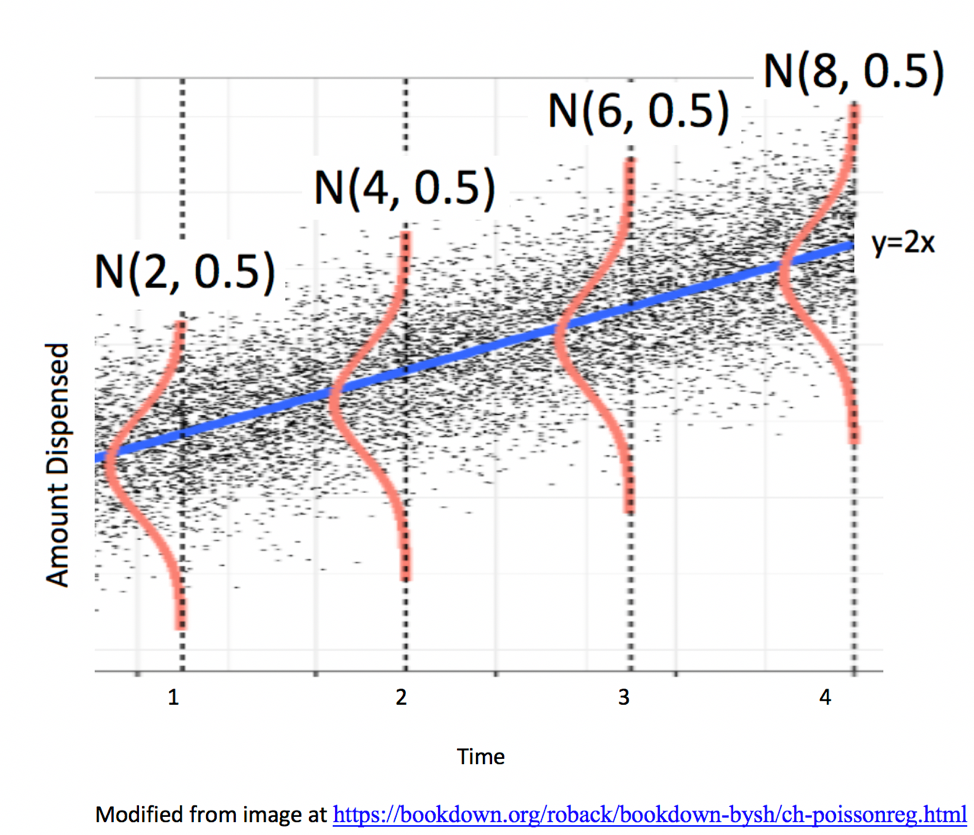
5 Building and Assessing Models
Learning Outcomes
Conceptual Learning Outcomes
24. State the assumptions of the normal error regression model and check their validity using residual plots, qq plots, and other information.
25. Interpret regression coefficients in models involving log transformations.
26. Calculate predicted values for models involving log transformations.
27. Interpret regression coefficient estimates on models with interaction terms.
28. Calculate predicted values for models with interaction terms.
29. Draw conclusions about models involving polynomial terms and interactions based on graphical representations of data. 31. Identify instances of confounding and Simpson’s paradox and draw conclusions in these situations.
30. Explain how multicollinearity impacts predictions and confidence/prediction intervals.
31. Determine whether it is appropriate to add terms to a model using information such as \(R^2\), F-statistic, residual plots, correlation, and other visual representations.
Computational Learning Outcomes
I. Build regression models involving nonlinear terms and interactions in R.
5.1 Checking Regression Assumptions
We’ve seen that tests and intervals based on the normal error regression model depend on four assumptions. If these assumptions are not reasonable then the tests and intervals may not be reliable.
The statement \(Y_i = \beta_0 + \beta_1X_{i1}+ \ldots + \beta_pX_{ip} + \epsilon_i\), with \(\epsilon_i\sim\mathcal{N}(0,\sigma)\) implies the following:
Linearity: the expected value of \(Y\) is a linear function of \(X_1, X_2, \ldots, X_p\). (This assumption is only relevant for models including at least one quantitative explanatory variable.)
Normality: Given the values of \(X_1, X_2, \ldots, X_p\), \(Y\) follows a normal distribution.
Constant Variance: Regardless of the values of \(X_1, X_2, \ldots, X_p\), the variance (or standard deviation) in the normal distribution for \(Y\) is the same.
Independence: The response value for each observation is not affected by any of the other observations (expect due to explanatory variables included in the model).
Illustration of Model Assumptions
We know that these assumptions held true in the ice cream example, because we generated the data in a way that was consistent with these.
In practice, we will have only the data, without knowing the exact mechanism that produced it. We should only rely on the t-distribution based p-values and confidence intervals in the R output if these appear to be reasonable assumptions.
Of course, these assumptions will almost never be truly satisfied, but they should at least be a reasonable approximation if we are to draw meaningful conclusions.
5.1.1 Checking Model Assumptions
The following plots are useful when assessing the appropriateness of the normal error regression model.
Scatterplot of residuals against predicted values
Histogram of standardized residuals
- heavy skewness indicates a problem with normality assumption
Normal quantile plot
- severe departures from diagonal line indicate problem with normality assumption
Residual vs Predicted Plots
A residual vs predicted plot is useful for detecting issues with the linearity or constant variance assumption.
- curvature indicates a problem with linearity assumption
- “funnel” or “megaphone” shape indicates problem with constant variance assumption
P1 <- ggplot(data=Violations, aes(y=no_viol_Model$residuals, x=no_viol_Model$fitted.values)) + geom_point() + ggtitle("No Violation") + xlab("Predicted Values") + ylab("Residuals")
P2 <- ggplot(data=Violations, aes(y=lin_viol_Model$residuals, x=no_viol_Model$fitted.values)) + geom_point() + ggtitle("Violation of Linearity Assumption")+ xlab("Predicted Values") + ylab("Residuals")
P3 <- ggplot(data=Violations, aes(y=cvar_viol_Model$residuals, x=no_viol_Model$fitted.values)) + geom_point() + ggtitle("Violation of Constant Variance Assumption")+ xlab("Predicted Values") + ylab("Residuals")
grid.arrange(P1, P2, P3, ncol=3)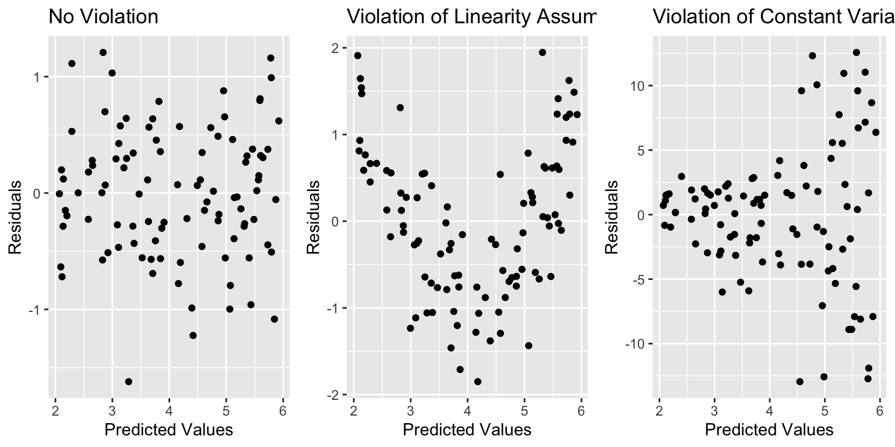
If there is only one explanatory variable, plotting the residuals against that variable reveals the same information as a residual vs predicted plot.
Histogram of Residuals
A histogram of the residuals is useful for assessing the normality assumption.
- Severe skewness indicates violation of normality assumption
P1 <- ggplot(data=Violations, aes(x=no_viol_Model$residuals)) + geom_histogram() + ggtitle("No Violation") +xlab("Residual")
P2 <- ggplot(data=Violations, aes(x=norm_viol_Model$residuals)) + geom_histogram() + ggtitle("Violation of Normality Assumption") + xlab("Residual")
grid.arrange(P1, P2, ncol=2)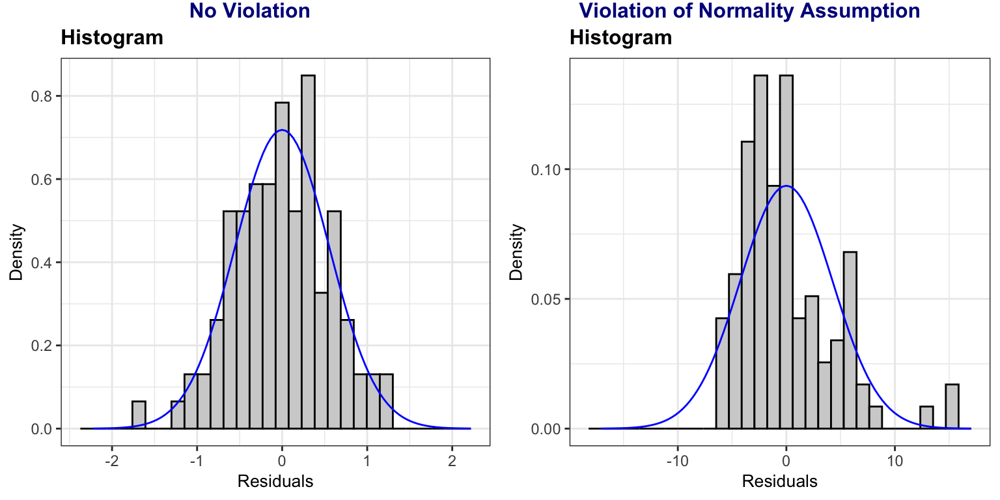
Normal Quantile-Quantile (QQ) Plot
Sometimes histograms can be inconclusive, especially when sample size is smaller.
A Normal quantile-quantile plot displays quantiles of the residuals against the expected quantiles of a normal distribution.
- Severe departures from diagonal line indicate a problem with normality assumption.
P1 <- ggplot(data=Violations, aes(sample = scale(no_viol_Model$residuals))) + stat_qq() + stat_qq_line() + xlab("Normal Quantiles") + ylab("Residual Quantiles") + ggtitle("No Violation") + xlim(c(-4,4)) + ylim(c(-4,4))
P2 <- ggplot(data=Violations, aes(sample = scale(norm_viol_Model$residuals))) + stat_qq() + stat_qq_line() + xlab("Normal Quantiles") + ylab("Residual Quantiles") + ggtitle("Violation of Normality Assumption") + xlim(c(-4,4)) + ylim(c(-4,4))
grid.arrange(P1, P2, ncol=2)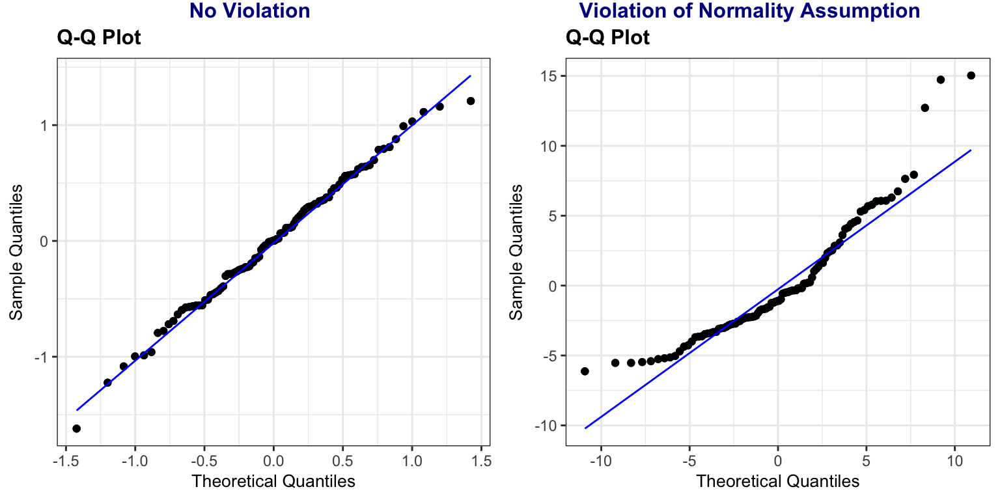
Checking Model Assumptions - Independence
Independence is often difficult to assess through plots of data, but it is important to think about whether there were factors in the data collection that would cause some observations to be more highly correlated than others.
For example:
- People in the study who are related.
- Some plants grown in the same greenhouse and others in different greenhouses.
- Some observations taken in same time period and others at different times.
All of these require more complicated models that account for correlation using spatial and time structure.
5.1.2 Summary of Checks for Model Assumptions
| Model assumption | How to detect violation |
|---|---|
| Linearity | Curvature in residual plot |
| Constant Variance | Funnel shape in residual plot |
| Normality | Skewness in histogram of residuals or departure from diag. line in QQ plot |
| Independence | No graphical check, carefully examine data collection |
5.1.3 Example: N v S Lakes
Recall our sample of 53 Florida Lakes, 33 in the north, and 20 in the south.
\(\text{Mercury}_i = \beta_0 + \beta_1\times{\text{South}_i} + \epsilon_i\), where \(\epsilon_i\sim\mathcal{N}(0, \sigma)\).
LakesBP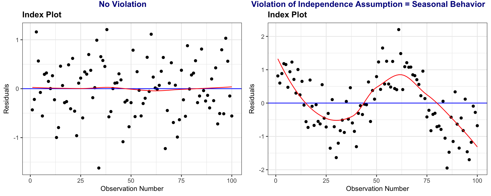
When we use the normal error regression model, we are assuming the following:
Linearity: there is an expected mercury concentration for lakes in North Florida, and another for lakes in South Florida.
Normality: mercury concentrations of individual lakes in the north are normally distributed, and so are mercury concentrations in the south. These normal distributions might have different means.
Constant Variance: the normal distribution for mercury concentrations in North Florida has the same standard deviation as the normal distribution for mercury concentrations in South Florida
Independence: no two lakes are any more alike than any others, except for being in the north or south, which we account for in the model. We might have concerns about this, do to some lakes being geographically closer to each other than others.
We should only use the p-values and confidence intervals provided by R, which depend on the t-distribution approximation, if we believe these assumptions are reasonable.
A residual by predicted plot, histogram of residuals, and normal quantile-quantile plot are shown below.
P1 <- ggplot(data=FloridaLakes, aes(y=M_Lakes_merc_loc$residuals, x=M_Lakes_merc_loc$fitted.values)) + geom_point() + ggtitle("Residual vs Predicted Plot") + xlab("Predicted Values") + ylab("Residuals")
P2 <- ggplot(data=FloridaLakes, aes(x=M_Lakes_merc_loc$residuals)) + geom_histogram() + ggtitle("Histogram of Residuals") + xlab("Residual")
P3 <- ggplot(data=FloridaLakes, aes(sample = scale(M_Lakes_merc_loc$residuals))) + stat_qq() + stat_qq_line() + xlab("Normal Quantiles") + ylab("Residual Quantiles") + ggtitle("Normal QQ Plot")
grid.arrange(P1, P2, P3, ncol=3)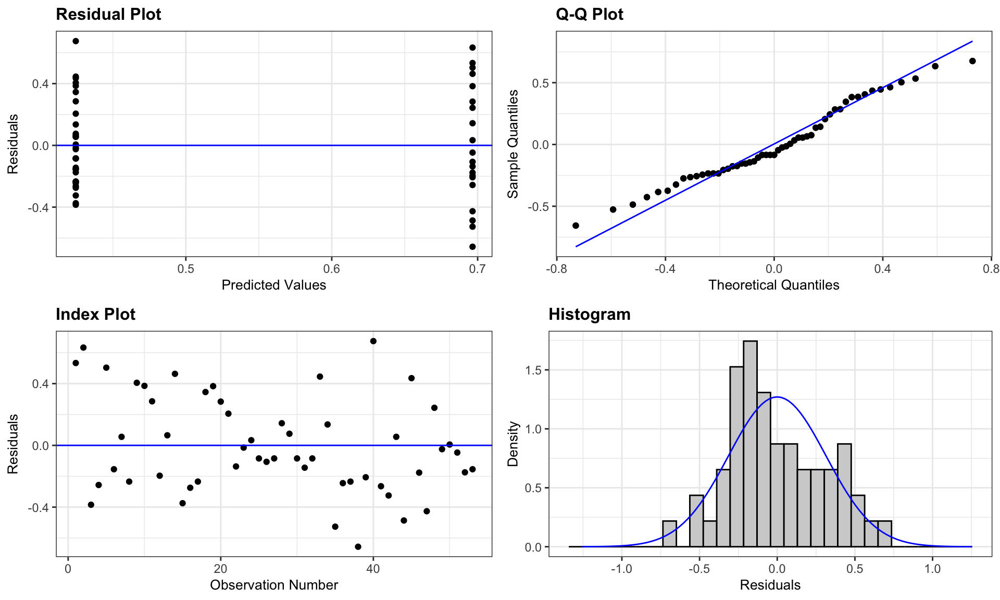
Notice that we see two lines of predicted values and residuals. This makes sense since all lakes in North Florida will have the same predicted value, as will all lakes in Southern Florida.
There appears to be a little more variability in residuals for Southern Florida (on the right), than Northern Florida, causing some concern about the constant variance assumption.
Overall, though, the assumptions seem mostly reasonable.
We shouldn’t be concerned about using theory-based hypothesis tests or confidence intervals for the mean mercury level or difference in mean mercury levels. There might be some concern that prediction intervals could be either too wide or too narrow, but this is not a major concern, since the constant variance assumption is not severe.
5.1.4 Example: pH Model
Recall the regression line estimating the relationship between a lake’s mercury level and pH.
\(\text{Mercury}_i = \beta_0 + \beta_1\times\text{pH}_i + \epsilon_i\), where \(\epsilon_i\sim\mathcal{N}(0, \sigma)\).
The model assumes:
Linearity: the expected mercury level of a lake is a linear function of pH.
Normality: for any given pH, the mercury levels of lakes with that pH follow a normal distribution. For example, mercury levels for lakes with pH of 6 is are normally distributed, and mercury levels for lakes with pH of 9 are normally distributed, though these normal distributions may have different means.
Constant Variance: the variance (or standard deviation) in the normal distribution for mercury level is the same for each pH. For example, there is the same amount of variability associated with lakes with pH level 6, as pH level 8.
Independence: no two lakes are any more alike than any others, except with respect to pH, which is accounted for in the model. This may not be a reasonable assumption, but it’s unclear what the effects of such a violation would be.
We should only use the p-values and confidence intervals provided by R, which depend on the t-distribution approximation, if we believe these assumptions are reasonable.
The plots for checking these assumptions are shown below.
P1 <- ggplot(data=FloridaLakes, aes(y=M_pH$residuals, x=M_pH$fitted.values)) + geom_point() + ggtitle("Residual vs Predicted Plot") + xlab("Predicted Values") + ylab("Residuals")
P2 <- ggplot(data=FloridaLakes, aes(x=M_pH$residuals)) + geom_histogram() + ggtitle("Histogram of Residuals") + xlab("Residual")
P3 <- ggplot(data=FloridaLakes, aes(sample = scale(M_pH$residuals))) + stat_qq() + stat_qq_line() + xlab("Normal Quantiles") + ylab("Residual Quantiles") + ggtitle("Normal QQ Plot")
grid.arrange(P1, P2, P3, ncol=3)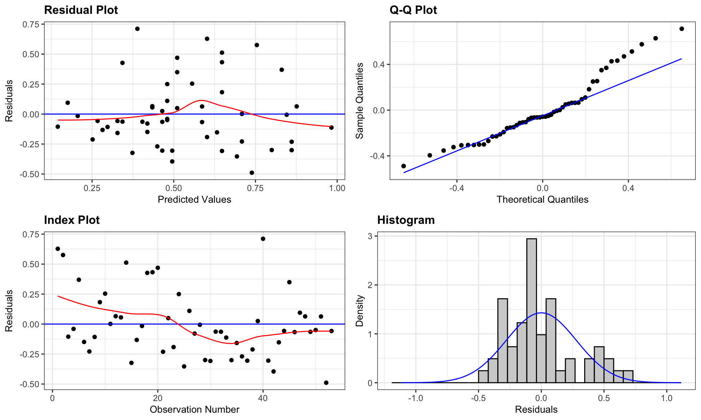
The residual vs predicted plot does not show any linear trend, and variability appears to be about the same for low predicted values as for high ones. Thus, the linearity and constant variance assumptions appear reasonable.
The histogram shows some right-skewness, and the right-most points on the normal-qq plot are above the line, indicating a possible concern with the normality assumption. There is some evidence of right-skewness, which might impact the appropriatness of the normal error regression model.
Nevertheless, we obtained similar results using the simulation-based results as the normal error regression model, suggesting that the concern about normality did not have much impact on the estimation of \(\beta_1\). It is possible that this concern could have implications for other kinds of inference, such as confidence intervals for an expected response, and prediction intervals, which we’ll explore later in the chapter.
5.1.5 Example: House Prices
Recall the model for estimating price of a house, using size, waterfront status, and an interaction term.
\(\text{Price}_i = \beta_0 + \beta_1\text{Sq.Ft.}_{i}+ \beta_2\text{Waterfront}_{i}+ \beta_3\times\text{Sq.Ft.}_i\times\text{Waterfront}_{i} + \epsilon_i\), where \(\epsilon_i\sim\mathcal{N}(0,\sigma)\).
The model assumes:
Linearity: the expected price of a house is a linear function of its size. The slope and intercept of this function may be different for houses on the waterfront, compared to houses not on the waterfront.
Normality: prices of houses of a given size and waterfront status are normally distributed.
Constant Variance: the variance (or standard deviation) in the normal distribution for prices is the same for all sizes and waterfront statuses.
Independence: no two houses are any more alike than any others, except with respect to size and waterfront status.
We should only use the p-values and confidence intervals provided by R, which depend on the t-distribution approximation, if we believe these assumptions are reasonable.
Several reasons come to mind that might cause us to doubt the validity of these assumptions, but let’s investigate them emperically, using our data on 100 houses.
The plots for checking these assumptions are shown below.
P1 <- ggplot(data=Houses, aes(y=M_House_Int$residuals, x=M_House_Int$fitted.values)) + geom_point() + ggtitle("Residual vs Predicted Plot") + xlab("Predicted Values") + ylab("Residuals")
P2 <- ggplot(data=Houses, aes(x=M_House_Int$residuals)) + geom_histogram() + ggtitle("Histogram of Residuals") + xlab("Residual")
P3 <- ggplot(data=Houses, aes(sample = scale(M_House_Int$residuals))) + stat_qq() + stat_qq_line() + xlab("Normal Quantiles") + ylab("Residual Quantiles") + ggtitle("Normal QQ Plot")
grid.arrange(P1, P2, P3, ncol=3)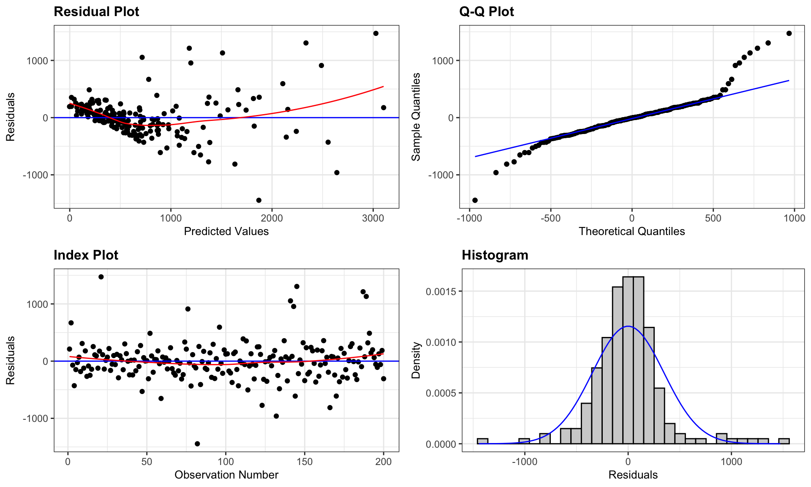
Although we might have had some initial concerns about the model assumptions, the plots do not raise any serious concerns. There is no sign of a nonlinear relationship in the residual vs predicted plot, so the linearity assumption appears reasonable.
There is possibly more variability associated with prices or more expensive houses than less expensive ones, so we might have some concerns about constant variance, but since there are only a few very high-priced houses, and the increasing variance is not too severe, this may not be much of a concern.
There are a few houses on each end of the normal qq plot that deviate from their expected line, but not very many. It’s not uncommon to have a few points deviate from the line on the end, so we do not have severe concerns about normality. The histogram of residuals is roughly symmetric.
Thus, the normal error regression model appears to be reasonable for these data.
5.1.6 Impact of Model Assumption Violations
In this chapter, we’ve studied the normal error regression model and its underlying assumptions. We’ve seen that when these assumptions are realistic, we can use distributions derived from probability theory, such as t and F distributions to approximate sampling distributions, in place of the simulation-based methods seen in Chapters 3 and 4.
Of course, real data don’t come exactly from processes like the fictional ice cream dispenser described in Section 5.1, so it’s really a question of whether this model is a realistic approximation (or simplification) of the true mechanism that led to the data we observe. We can use diagnostics like residual and Normal-QQ plots, as well as our intuition and background knowledge to assess whether the normal error regression model is a reasonable approximation.
The p-values provided by the lm summary output, and anova commands, and the and intervals produced by the confint, and predict command, as well as many other R commands, depend on the assumptions of the normal error regression model, and should only be used when these assumptions are reasonable.
In situations where some model assumptions appear to be violated, we might be okay using certain tests/intervals, but not others. In general, we should proceed with caution in these situations.
The table below provides guidance on the potential impact of model assumption violation on predicted values, confidence intervals, and prediction intervals.
| Model assumption Violated | Predicted Values | Confidence Intervals | Prediction Intervals |
|---|---|---|---|
| Linearity | Unreliable | Unreliable | Unreliable |
| Constant Variance | Reliable | Somewhat unreliable - Some too wide, others too narrow | Very unreliable - Some too wide, others too narrow |
| Normality | Reliable | Possibly unreliable - might be symmetric when they shouldn’t be. Might be okay when skewness isn’t bad and sample size is large. | Very unreliable - will be symmetric when they shouldn’t be |
| Independence | might be reliable | unreliable - either too wide or too narrow | unreliable - either too wide or too narrow |
When model assumptions are a concern, consider a using a transformation of the data, a more advanced model, or a more flexible technique, such as a nonparametric approach or statistical machine learning algorithm.
5.2 Transformations
When there are violations of model assumptions, we can sometimes correct for these by modeling a a function of the response variable, rather than the response variable itself. When the histogram of residuals and normal qq plot show signs of right-skewness, modeling \(log(Y)\) is often helpful.
5.2.1 Example: Modeling Car Prices
We’ll look at the assumptions associated with the model for predicting car price, using acceleration time as the explanatory variable.
Diagnostic plots are shown below.
P1 <- ggplot(data=Cars2015, aes(y=Cars_M_A060$residuals, x=Cars_M_A060$fitted.values)) + geom_point() + ggtitle("Residual Plot") + xlab("Predicted Values") + ylab("Residuals")
P2 <- ggplot(data=Cars2015, aes(x=Cars_M_A060$residuals)) + geom_histogram() + ggtitle("Histogram of Residuals") + xlab("Residual")
P3 <- ggplot(data=Cars2015, aes(sample = scale(Cars_M_A060$residuals))) + stat_qq() + stat_qq_line() + xlab("Normal Quantiles") + ylab("Residual Quantiles") + ggtitle("Normal QQ Plot")
grid.arrange(P1, P2, P3, ncol=3)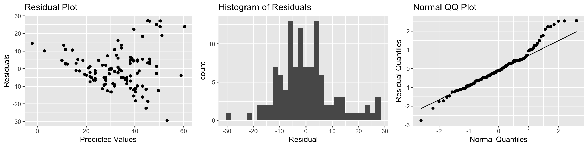
There is a funnel-shape in the residual plot, indicating a concern about the constant variance assumption. There appears to be more variability in prices for more expensive cars than for cheaper cars. There is also some concern about the normality assumption, as the histogram and QQ plot indicate right-skew in the residuals.
5.2.2 Log Transformation
When residual plots yield model inadequacy, we might try to correct these by applying a transformation to the response variable.
When working a nonnegative, right-skewed response variable, it is often helpful to work with the logarithm of the response variable.
Note: In R, log() denotes the natural (base e) logarithm, often denoted ln(). We can actually use any logarithm, but the natural logarithm is commonly used.
We’ll use the model:
\[ \text{Log Price} = \beta_0 + \beta_1\times \text{Acc060} + \epsilon_i , \text{ where } \epsilon_i\sim\mathcal{N}(0, \sigma) \]
The plot shows log(price) on the y-axis. We see that the relationship appears more linear than when we plot price itself.
ggplot(data=Cars2015, aes(x=Acc060, y=log(Price))) + geom_point() +
xlab("Acceleration Time") + ylab("Log of Price") +
ggtitle("Acceleration Time and Log Price") + stat_smooth(method="lm", se=FALSE)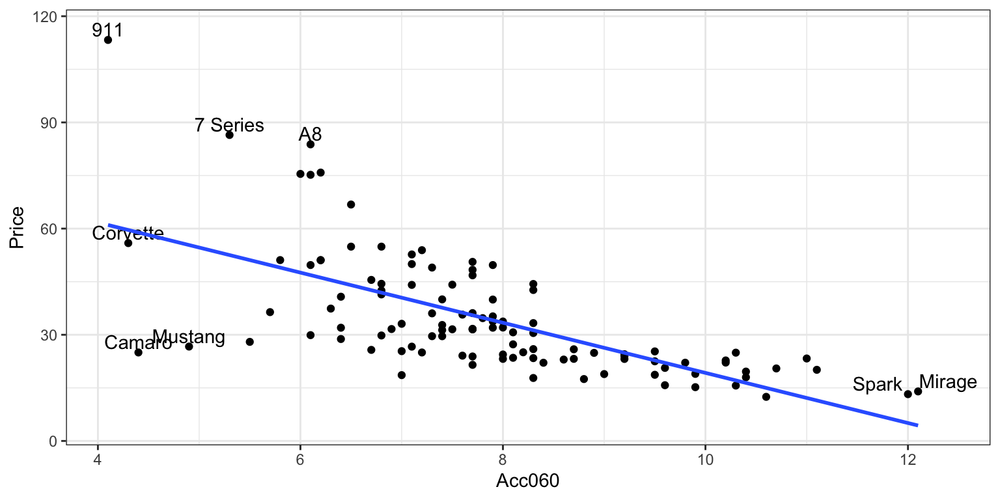
Log Transformation Model - What We’re Assuming
Linearity: the log of expected price of a car is a linear function of its acceleration time.
Normality: for any given acceleration time, the log of prices of actual cars follow a normal distribution.
Constant Variance: the normal distribution for log of price is the same for all acceleration times.
Independence: no two cars are any more alike than any others.
We should only use the p-values and confidence intervals provided by R, which depend on the t-distribution approximation, if we believe these assumptions are reasonable.
Cars_M_Log <- lm(data=Cars2015, log(Price)~Acc060)
summary(Cars_M_Log)
Call:
lm(formula = log(Price) ~ Acc060, data = Cars2015)
Residuals:
Min 1Q Median 3Q Max
-0.84587 -0.19396 0.00908 0.18615 0.53350
Coefficients:
Estimate Std. Error t value Pr(>|t|)
(Intercept) 5.13682 0.13021 39.45 <0.0000000000000002 ***
Acc060 -0.22064 0.01607 -13.73 <0.0000000000000002 ***
---
Signif. codes: 0 '***' 0.001 '**' 0.01 '*' 0.05 '.' 0.1 ' ' 1
Residual standard error: 0.276 on 108 degrees of freedom
Multiple R-squared: 0.6359, Adjusted R-squared: 0.6325
F-statistic: 188.6 on 1 and 108 DF, p-value: < 0.00000000000000022Assumption Check for Model on Log Price
P1 <- ggplot(data=Cars2015, aes(y=Cars_M_Log$residuals, x=Cars_M_Log$fitted.values)) + geom_point() + ggtitle("Cars Log Model Residual Plot") + xlab("Predicted Values") + ylab("Residuals")
P2 <- ggplot(data=Cars2015, aes(x=Cars_M_Log$residuals)) + geom_histogram() + ggtitle("Histogram of Residuals") + xlab("Residual")
P3 <- ggplot(data=Cars2015, aes(sample = scale(Cars_M_Log$residuals))) + stat_qq() + stat_qq_line() + xlab("Normal Quantiles") + ylab("Residual Quantiles") + ggtitle("Cars Model QQ Plot")
grid.arrange(P1, P2, P3, ncol=3)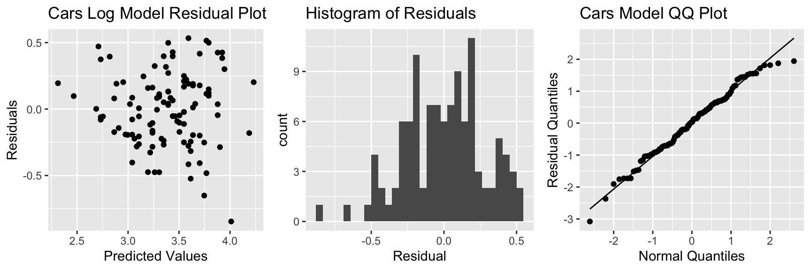
There is still some concern about constant variance, though perhaps not as much. The normality assumption appears more reasonable.
5.2.3 Inference for Log Model
R output for the model is shown below.
Cars_M_Log <- lm(data=Cars2015, log(Price)~Acc060)
summary(Cars_M_Log)
Call:
lm(formula = log(Price) ~ Acc060, data = Cars2015)
Residuals:
Min 1Q Median 3Q Max
-0.84587 -0.19396 0.00908 0.18615 0.53350
Coefficients:
Estimate Std. Error t value Pr(>|t|)
(Intercept) 5.13682 0.13021 39.45 <0.0000000000000002 ***
Acc060 -0.22064 0.01607 -13.73 <0.0000000000000002 ***
---
Signif. codes: 0 '***' 0.001 '**' 0.01 '*' 0.05 '.' 0.1 ' ' 1
Residual standard error: 0.276 on 108 degrees of freedom
Multiple R-squared: 0.6359, Adjusted R-squared: 0.6325
F-statistic: 188.6 on 1 and 108 DF, p-value: < 0.00000000000000022Prediction Equation:
\[ \begin{aligned} \widehat{\text{Price}} & = e^{5.13582-0.22064 \times \text{Acc060}} \end{aligned} \]
Predicted price for car that takes 7 seconds to accelerate:
\[ \begin{aligned} \widehat{\text{Price}} & = e^{5.13582-0.22064 \times \text{7}} = 36.3 \end{aligned} \]
Predicted price for car that takes 10 seconds to accelerate:
\[ \begin{aligned} \widehat{\text{Price}} & = e^{5.13582-0.22064 \times \text{10}}= 18.7 \end{aligned} \]
Predictions are for log(Price), so we need to exponentiate.
predict(Cars_M_Log, newdata=data.frame(Acc060=c(7))) 1
3.592343 exp(predict(Cars_M_Log, newdata=data.frame(Acc060=c(7)))) 1
36.31908 A car that accelerates from 0 to 60 mph in 7 seconds is expected to cost 36.3 thousand dollars.
5.2.4 Log Model Interpretations
\[ \begin{aligned} \text{Log of Expected Price} & = \beta_0 + \beta_1\times \text{Acc060}\ \text{, Thus:} \\ \text{ Expected Price} & = e^{\beta_0 + \beta_1\times \text{Acc060} } \\ & e^{\beta_0}e^{\beta_1 \times \text{Acc060}} \\ & e^{\beta_0}(e^{\beta_1})^\text{Acc060} \end{aligned} \]
\(e^{\beta_0}\) is theoretically the expected price of a car that can accelerate from 0 to 60 mph in no time, but this is not a meaningful interpretation.
For each additional second it takes a car to accelerate, price is expected to multiply by a factor of \(e^{b_1}\).
Exponentiating the model coefficients gives:
exp(Cars_M_Log$coefficients)(Intercept) Acc060
170.1730148 0.8020062 - For each additional second in acceleration time, price is expected to multiply by a a factor of \(e^{-0.22} = 0.80\). Thus, each 1-second increase in acceleration time is estimated to be associated with a 20% drop in price, on average.
Confidence Intervals for \(\beta_0\) and \(\beta_1\)
confint(Cars_M_Log) 2.5 % 97.5 %
(Intercept) 4.8787105 5.3949208
Acc060 -0.2524862 -0.1887916exp(confint(Cars_M_Log)) 2.5 % 97.5 %
(Intercept) 131.4610408 220.284693
Acc060 0.7768669 0.827959- We are 95% confident that the price of a car changes, on average, by multiplicative factor between \(e^{-0.252} = 0.7773\) and \(e^{-0.189}=0.828\) for each additional second in acceleration time. That is, we believe the price decreases between 17% and 23% on average for each additional second in acceleration time.
Log Model CI for Expected Response
If we just use the predict function, we get a confidence interval for log(price).
predict(Cars_M_Log, newdata=data.frame(Acc060=c(7)), interval="confidence") fit lwr upr
1 3.592343 3.53225 3.652436To get an interval for price itself, we exponentiate, using exp.
exp(predict(Cars_M_Log, newdata=data.frame(Acc060=c(7)), interval="confidence")) fit lwr upr
1 36.31908 34.20083 38.56852We are 95% confident that the mean price amoung all cars that accelerate from 0 to 60 mph in 7 seconds is between \(e^{3.53225} =34.2\) and \(e^{3.652436}=38.6\) thousand dollars.
Log Model Prediction Interval
predict(Cars_M_Log, newdata=data.frame(Acc060=c(7)), interval="prediction") fit lwr upr
1 3.592343 3.042041 4.142645exp(predict(Cars_M_Log, newdata=data.frame(Acc060=c(7)), interval="prediction")) fit lwr upr
1 36.31908 20.94796 62.96917We are 95% confident that the expected price for a car that accelerates from 0 to 60 mph in 7 seconds is between \(e^{3.04} =20.9\) and \(e^{4.14}=63.9\) thousand dollars.
5.2.5 Model Comparisons
We’ll compare the intervals we obtain using the log transformation to those from the model without the transformation.
95% Confidence interval for average price of cars that take 7 seconds to accelerate:
Original Model:
predict(Cars_M_A060, newdata=data.frame(Acc060=7), interval="confidence", level=0.95) fit lwr upr
1 39.5502 37.21856 41.88184Transformed Model:
exp(predict(Cars_M_Log, newdata=data.frame(Acc060=c(7)), interval="confidence", level=0.95)) fit lwr upr
1 36.31908 34.20083 38.5685295% Prediction interval for price of an individual car that takes 7 seconds to accelerate:
Original Model:
predict(Cars_M_A060, newdata=data.frame(Acc060=7), interval="prediction", level=0.95) fit lwr upr
1 39.5502 18.19826 60.90215Transformed Model:
exp(predict(Cars_M_Log, newdata=data.frame(Acc060=c(7)), interval="prediction", level=0.95)) fit lwr upr
1 36.31908 20.94796 62.96917Notice that the transformed interval is not symmetric and allows for a longer “tail” on the right than the left.
5.2.6 Log Model Visualization
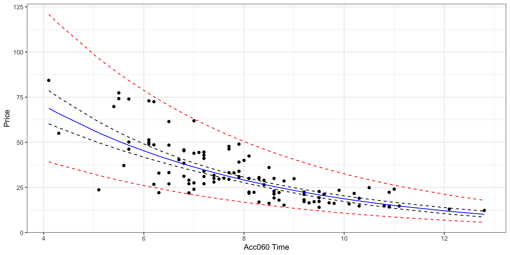
The log model suggests an nonlinear trend in price with respect to acceleration time and gives wider confidence and prediction intervals for cars that accelerate faster and tend to be more expensive. It also gives non-symmetric intervals. These results appear to be consistent with the observed data.
5.3 Polynomial Regression
5.4 Models with Interaction
5.4.1 Definition of Interaction
We previously used a multiple regression model of the form
\[ \widehat{Price} = b_0 + b_1\times\text{SqFt} + b_2\times\text{Waterfront} \]
Recall that this model assumes the slope relating price and square footage is the same (\(b_1\)) for houses on the waterfront as for houses not on the waterfront. An illustration of the model is shown below.
Plot_House_price_sqft_wf
This assumption of the rate of change in price with respect to living space being the same for waterfront houses, as for non-waterfront houses might be unrealistic.
Let’s fit separate lines waterfront and non-waterfront houses, without requiring them to have the same slope.
ggplot(data=Houses, aes(x=sqft_living, y=price, color=waterfront)) + geom_point()+stat_smooth(method="lm", se=FALSE) + ylim(c(0,1000)) + theme_bw()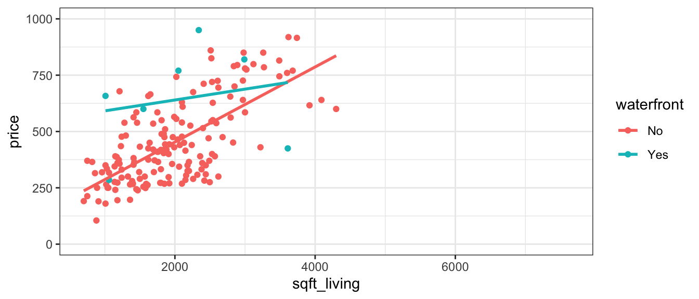
It appears that the prices of the houses on the waterfront are increasing more rapidly, with respect to square feet of living space, than the non-waterfront houses. The effect of additional square feet on the price of the house appears to depend on whether or not the house is on the waterfront. This is an example of an interaction between square footage and waterfront status.
An interaction between two explanatory variables occurs when the effect of one explanatory variable on the response depends on the other explanatory variable.
5.4.2 Interaction Term
If we want to allow for different slopes between waterfront and non-waterfront houses, we’ll need to change the mathematical equation of our model. To do that, we’ll add a coefficient \(b_3\), multiplied by the product of our two explanatory variables.
The model equation is
\[ \widehat{Price} = b_0 + b_1\times\text{Sq. Ft.} + b_2\times\text{waterfront} + b_3\times\text{Sq.Ft}\times\text{Waterfront} \]
The last term is called an interaction term.
For a house on the waterfront (\(\text{waterfront}=1\)), the equation relating price to square feet is
\[ \begin{aligned} \widehat{Price} & = b_0 + b_1\times\text{Sq. Ft.} + b_2\times\text{1} + b_3\times\text{Sq.Ft}\times\text{1} \\ & = (b_0+b_2) + (b_1+b_3)\times{\text{Sq. Ft.}} \end{aligned} \] For a house not on the waterfront (\(\text{waterfront}=0\)), the equation relating price to square feet is
\[ \begin{aligned} \widehat{Price} & = b_0 + b_1\times\text{Sq. Ft.} + b_2\times\text{0} + b_3\times\text{Sq.Ft}\times\text{0} \\ & = b_0 + b_1\times{\text{Sq. Ft}} \end{aligned} \]
The intercept is \(b_0\) for non-waterfront houses, and \(b_0 + b_2\) for waterfront houses.
The slope is \(b_1\) for non-waterfront houses, and \(b_1 + b_3\) for waterfront houses.
Thus, the model allows both the slope and intercept to differ between waterfront and non-waterfront houses.
5.4.3 Interaction Models in R
To fit an interaction model in R, use * instead of +
M_House_Int <- lm(data=Houses, price~sqft_living*waterfront)
M_House_Int
Call:
lm(formula = price ~ sqft_living * waterfront, data = Houses)
Coefficients:
(Intercept) sqft_living
-114.3735 0.3099
waterfrontYes sqft_living:waterfrontYes
-90.1153 0.2729 The regression equation is
\[ \widehat{Price} = 67.4 + 0.2184\times\text{Sq. Ft.} -364.6\times\text{waterfront} + 0.4327\times\text{Sq.Ft}\times\text{Waterfront} \]
For a house on the waterfront (\(\text{waterfront}=1\)), the equation is
\[ \begin{aligned} \widehat{Price} & = 67.4 + 0.2184\times\text{Sq. Ft.} -364.6 \times\text{1} + 0.4327\times\text{Sq.Ft}\times\text{1} \\ & = (67.4 - 364.6) + (0.2184+0.4327)\times{\text{Sq. Ft.}} \\ & = -297.2 + 0.6511\times{\text{Sq. Ft.}} \end{aligned} \] For a house not on the waterfront (\(\text{waterfront}=0\)), the equation is
\[ \begin{aligned} \widehat{Price} & = 67.4 + 0.2184\times\text{Sq. Ft.} -364.6 \times\text{0} + 0.4327\times\text{Sq.Ft}\times\text{0} \\ & = 67.4 0 + 0.2184\times{\text{Sq. Ft.}} \end{aligned} \] Interpretation
When interpreting \(b_0\) and \(b_1\), we need to state that the interpretations apply only to the “baseline” category (in this case non-waterfront houses).
In a model with interaction, it does not make sense to talk about holding one variable constant when interpreting the effect of the other, since the effect of one variable depends on the value or category of the other. Instead, we must state the value or category of one variable when interpreting the effect of the other.
Interpretations:
\(b_0\) - On average, a house with 0 square feet that is not on the waterfront is expected to cost 67 thousand dollars. This is not a sensible interpretation since there are no houses with 0 square feet.
\(b_1\) - For each additional square foot in size, the price of a non-waterfront house is expected to increase by 0.2184 thousand dollars.
\(b_2\) - On average, the price of a waterfront house with 0 square feet is expected to be 364.6 thousand dollars less than the price of a non-waterfront house with 0 square feet. This is not a sensible interpretation in this case.
\(b_3\) - For each additional square foot in size, the price of a waterfront house is expected to increase by 0.4327 thousand dollars more than a non-waterfront house.
Alternatively, we could interpret \(b_0+b_2\) and \(b_1+b_3\) together.
\(b_0 + b_2\) - On average, a house with 0 square feet that is on the waterfront is expected to cost -297.2 thousand dollars. This is not a sensible interpretation since there are no houses with 0 square feet.
\(b_1 + b_3\) - For each additional square foot in size, the price of a waterfront house is expected to increase by 0.6511 thousand dollars.
Prediction
We calculate predicted prices for the following houses:
Houses[c(1,16), ] %>% select(ID, price, sqft_living, waterfront)# A tibble: 2 × 4
ID price sqft_living waterfront
<int> <dbl> <dbl> <chr>
1 90 335. 1030 No
2 2141 1700 2500 Yes \[ \widehat{Price}_1 = 67.4 + 0.2184\times5420 -364.6\times0 + 0.4327\times5420 \times 0 = 1191 \text{ thousand dollars} \]
\[ \widehat{Price}_{16} = 67.4 + 0.2184\times4450 -364.6\times1 + 0.4327\times4450 \times 1 = 2600 \text{ thousand dollars} \]
5.4.4 \(R^2\) for Interaction Model
We can calculate residuals, as well as SSR, SSM, SST, and \(R^2\), in the same manner we’ve seen previously.
We’ll perform these calculations using R.
SSR_int <- sum(M_House_Int$residuals^2)
SSR_int[1] 20429024\[ SSM = SST-SSR = 69,045,634 - 10,139,974 =58,905,660. \]
\[ R^2 = \frac{58,905,660}{69,045,634}=0.8531. \]
Approximately 85.3% of the total variability in sale price is explained by the model using square feet and waterfront status, as well as an interaction between them as the explanatory variables.
We calculate \(R^2\) directly in R.
summary(M_House_Int)$r.squared[1] 0.7770731We see that adding an interaction term improved the proportion of variability in house price explained by the model from 0.76 to 0.85. This is a fairly notable increase.
5.4.5 Considerations for Using Interactions
It might be tempting to think we should always add an interaction term to a model when using two or more explanatory variables. After all, an interaction term is just another term added to the model, meaning that \(R^2\) will never go down.
Adding an interaction term is not always a good idea, though. We saw that doing so makes interpretations more complicated. Increasing the complexity of a model also increases the risk of overfitting, potentially hurting predictive performance on new data.
We should only add an interaction term if we have strong reason to believe that the rate of change in the response variable with respect to one explanatory variable really does depend on the other variable. This might come from background knowledge about the subject, or consultation with an expert in the area. It could also come from data visualization, and the increase in variability in the response variable explained when an interaction term is added to the model.
In the house price dataset, we might expect that the price of waterfront houses might increase more rapidly as they get bigger than the price of non-waterfront houses. The fact that the lines shown in the scatterplot are not close to being parallel provides further evidence of a difference in rate of increase, providing justification for the use of an interaction term in the model. Furthermore, \(R^2\) increases notably (from 0.76 to 0.85), when an interaction term is added. All of these reasons support using an interaction term in this context.
When examining a scatterplot, we should note that even if there is truly no interaction among all houses, the lines probably won’t be exactly parallel, due to random deviations among the sample of houses chosen. If the lines are reasonably close to parallel, then an interaction term is likely not needed.
We’ll look more at criteria for determining whether to add an interaction term to a model in the coming sections.
5.4.6 Interaction vs Correlation
It is easy to confuse the concept of interaction with that of correlation. These are, in fact, very different concepts.
A correlation between two variables means that as one increases, the other is more likely to increase or decrease. We only use the word correlation to describe two quantitative variables, but we could discuss the similar notion of a relationship between categorical variables.
An interaction between two explanatory variables means that the effect of one on the response depends on the other.
Examples of Correlations (or relationships)
Houses on the waterfront tend to be bigger than houses not on the waterfront, so there is a relationship between square feet and waterfront status.
Houses with large amounts of living space in square feet are likely to have more bedrooms, so there is a correlation between living space and bedrooms.
Suppose that some genres of movies (drama, comedy, action, etc.) tend to be longer than others. This is an example of a relationship between genre and length.
The fact that there is a correlation between explanatory variables is NOT a reason to add an interaction term involving those variables in a model. Correlation is something entirely different than interaction!
Examples of Interactions
As houses on the waterfront increase in size, their price increases more rapidly than for houses not on the waterfront. This means there is an interaction between size and waterfront location.
Suppose that the effect of additional bedrooms on price is different for houses with lots of living space than for houses with little living space. This would be an example of an interaction between living space and number of bedrooms.
Suppose that audiences become more favorable to dramas as they get longer, but less favorable to comedies as they get longer. In this scenario, the effect of movie length on audience rating depends on the genre of the movie, indicating an interaction between length and genre.
5.5 Building Models for Interpretation
So far, we’ve dealt with models with 2 or fewer variables. Some real questions require accounting for more than two variables. In these situations, we’ll need to develop a model that is complex enough to capture the important aspects of the mechanism we’re modeling, but also simple enough for us to be able to explain and interpret. We’ll need to decide how many variables to include in the model, and whether to use transformations, or to include interaction terms.
We’ll examine strategies for modeling in two different contexts. In this chapter, we’ll focus on building models for situations when we want to make interpretations and draw conclusions about relationships between variables. In Chapter 7, we focus on modeling solely for the purpose of prediction, when we are not interested in making interpretations or conclusions about relationships between variables.
When building a model for the purpose of interpretation, we are typically interested in investigating a research question pertaining to relationships between explanatory and response variables. We’ll need to think about things like:
- which explanatory variables should we include in the model, and how many?
- should we include any interaction terms?
- should we use any nonlinear terms?
- should we use a transformation of the response variable?
We’ll go through a couple example to see how we can address these questions in building a model.
Keep in mind, there is no single correct model, but there are common characteristics of a good model. While two statisticians might use different models for a given set of data, they will hopefully lead to reasonably similar conclusions if constructed carefully.
5.5.1 Modeling SAT Scores
We’ll now look at a dataset containing education data on all 50 states. It includes the following variables.
state - a factor with names of each state
expend - expenditure per pupil in average daily attendance in public elementary and secondary schools, 1994-95 (in thousands of US dollars)
ratio - average pupil/teacher ratio in public elementary and secondary schools, Fall 1994
salary - estimated average annual salary of teachers in public elementary and secondary schools, 1994-95 (in thousands of US dollars)
frac - percentage of all eligible students taking the SAT, 1994-95
sat - average total SAT score, 1994-95
region - region of the country
library(mosaicData)
data(SAT)
SAT <- SAT %>% dplyr::select(-c(verbal, math))
library(Lock5Data)
data("USStates")
SAT <- SAT %>% left_join(USStates %>% select(State, Region), by=c("state"="State")) %>% rename(region = Region)SAT state expend ratio salary frac sat region
1 Alabama 4.405 17.2 31.144 8 1029 S
2 Alaska 8.963 17.6 47.951 47 934 W
3 Arizona 4.778 19.3 32.175 27 944 W
4 Arkansas 4.459 17.1 28.934 6 1005 S
5 California 4.992 24.0 41.078 45 902 W
6 Colorado 5.443 18.4 34.571 29 980 W
7 Connecticut 8.817 14.4 50.045 81 908 NE
8 Delaware 7.030 16.6 39.076 68 897 NE
9 Florida 5.718 19.1 32.588 48 889 S
10 Georgia 5.193 16.3 32.291 65 854 S
11 Hawaii 6.078 17.9 38.518 57 889 W
12 Idaho 4.210 19.1 29.783 15 979 W
13 Illinois 6.136 17.3 39.431 13 1048 MW
14 Indiana 5.826 17.5 36.785 58 882 MW
15 Iowa 5.483 15.8 31.511 5 1099 MW
16 Kansas 5.817 15.1 34.652 9 1060 MW
17 Kentucky 5.217 17.0 32.257 11 999 MW
18 Louisiana 4.761 16.8 26.461 9 1021 S
19 Maine 6.428 13.8 31.972 68 896 NE
20 Maryland 7.245 17.0 40.661 64 909 NE
21 Massachusetts 7.287 14.8 40.795 80 907 NE
22 Michigan 6.994 20.1 41.895 11 1033 MW
23 Minnesota 6.000 17.5 35.948 9 1085 MW
24 Mississippi 4.080 17.5 26.818 4 1036 S
25 Missouri 5.383 15.5 31.189 9 1045 MW
26 Montana 5.692 16.3 28.785 21 1009 W
27 Nebraska 5.935 14.5 30.922 9 1050 MW
28 Nevada 5.160 18.7 34.836 30 917 W
29 New Hampshire 5.859 15.6 34.720 70 935 NE
30 New Jersey 9.774 13.8 46.087 70 898 NE
31 New Mexico 4.586 17.2 28.493 11 1015 W
32 New York 9.623 15.2 47.612 74 892 NE
33 North Carolina 5.077 16.2 30.793 60 865 S
34 North Dakota 4.775 15.3 26.327 5 1107 MW
35 Ohio 6.162 16.6 36.802 23 975 MW
36 Oklahoma 4.845 15.5 28.172 9 1027 S
37 Oregon 6.436 19.9 38.555 51 947 W
38 Pennsylvania 7.109 17.1 44.510 70 880 NE
39 Rhode Island 7.469 14.7 40.729 70 888 NE
40 South Carolina 4.797 16.4 30.279 58 844 S
41 South Dakota 4.775 14.4 25.994 5 1068 MW
42 Tennessee 4.388 18.6 32.477 12 1040 S
43 Texas 5.222 15.7 31.223 47 893 S
44 Utah 3.656 24.3 29.082 4 1076 W
45 Vermont 6.750 13.8 35.406 68 901 NE
46 Virginia 5.327 14.6 33.987 65 896 S
47 Washington 5.906 20.2 36.151 48 937 W
48 West Virginia 6.107 14.8 31.944 17 932 S
49 Wisconsin 6.930 15.9 37.746 9 1073 MW
50 Wyoming 6.160 14.9 31.285 10 1001 WNote that the dataset is quite old (from 1994-95), so the financial information may be out of date. Nevertheless, it is useful for exploring relationships between SAT scores and other variables.
Research Question
A good statistical research question should be one that has practical implications that people would care about. It should be complex enough to be worth investigating. If the answer is obvious, then there would be no need to use statistics, or scientific reasoning in general.
For the SAT score dataset, we’ll focus on the question:
Do students in states that prioritize education spending achieve better SAT scores?
While this may seem like a straightforward question, we’ll see that answering it properly requires careful thought and analysis.
5.5.1.1 Initial Model
One way to measure a state’s investment in education is in how much it pays its teachers. The plot displays average SAT score against average teacher salary for all 50 US states.
ggplot(data=SAT, aes(y=sat, x=salary)) + geom_point() +
stat_smooth(method="lm", se=FALSE) +
ggtitle("Average SAT score vs Average Teacher Salary") +
xlab("Average Teacher Salary in Thousands") 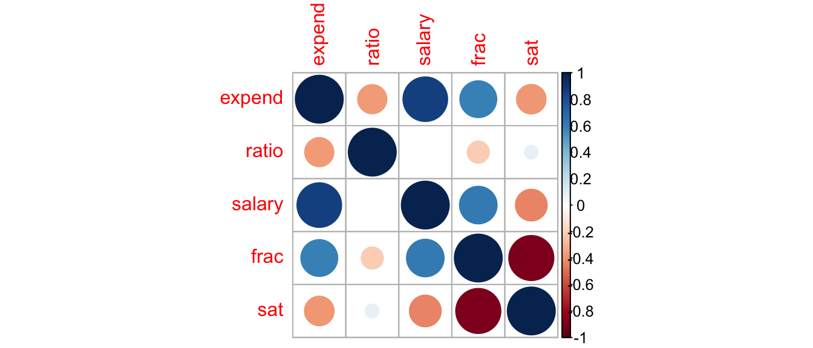
Fitting a simple linear regression model to the data, we obtain the following:
SAT_M1 <- lm(data=SAT, sat~salary)
summary(SAT_M1)
Call:
lm(formula = sat ~ salary, data = SAT)
Residuals:
Min 1Q Median 3Q Max
-147.125 -45.354 4.073 42.193 125.279
Coefficients:
Estimate Std. Error t value Pr(>|t|)
(Intercept) 1158.859 57.659 20.098 < 0.0000000000000002 ***
salary -5.540 1.632 -3.394 0.00139 **
---
Signif. codes: 0 '***' 0.001 '**' 0.01 '*' 0.05 '.' 0.1 ' ' 1
Residual standard error: 67.89 on 48 degrees of freedom
Multiple R-squared: 0.1935, Adjusted R-squared: 0.1767
F-statistic: 11.52 on 1 and 48 DF, p-value: 0.001391On average, SAT score is expected to decrease by about 5.5 points for each additional one thousand dollars in average teacher salary in the state. The low p-value suggests a relationship like this is unlikely to occur by chance, though the practical importance of a 5-point decrease in SAT score (out of 1600) seems minimal. Furthermore, only 19% of the total variation in SAT score is explained by teaching salary. Nevertheless, a person looking to argue against raising teacher salaries might use the negative estimate and low p-value as a justification for their position.
5.5.1.2 A Deeper Investigation
Notice that there are large discrepancies in the frac variable, representing the percentage of students taking the SAT. In Connecticut, 81% of high school students took the SAT, compared to only 6% in Arkansas.
Let’s break the data down by the percentage of students who take the SAT. We’ll (somewhat arbitrarily), divide the states into
Low = 0%-22%
Medium = 22-49%
High = 49-81%
SAT <- mutate(SAT, fracgrp = cut(frac,
breaks=c(0, 22, 49, 81),
labels=c("low", "medium", "high")))Plotting SAT score against average teacher salary in each state, we see that the picture changes.
ggplot(data=SAT, aes( y=sat, x=salary )) +geom_point() + facet_wrap(facets = ~fracgrp) +
stat_smooth(method="lm", se=FALSE) + xlab("Average Teacher Salary in Thousands")There appears to be a slight positive relationship between teacher salary and SAT score in each state.
While breaking up the data into these three groups helps us visualize, we’ll simply add the frac variable to the model as a quantitative variable, rather than breaking it into these arbitrary categories.
SAT_M2 <- lm(data=SAT, sat~salary+frac)
summary(SAT_M2)
Call:
lm(formula = sat ~ salary + frac, data = SAT)
Residuals:
Min 1Q Median 3Q Max
-78.313 -26.731 3.168 18.951 75.590
Coefficients:
Estimate Std. Error t value Pr(>|t|)
(Intercept) 987.9005 31.8775 30.991 < 0.0000000000000002 ***
salary 2.1804 1.0291 2.119 0.0394 *
frac -2.7787 0.2285 -12.163 0.0000000000000004 ***
---
Signif. codes: 0 '***' 0.001 '**' 0.01 '*' 0.05 '.' 0.1 ' ' 1
Residual standard error: 33.69 on 47 degrees of freedom
Multiple R-squared: 0.8056, Adjusted R-squared: 0.7973
F-statistic: 97.36 on 2 and 47 DF, p-value: < 0.00000000000000022For each one thousand dollar increase in average teacher salary, a state’s average SAT score is expected to increase by 2.18 points, assuming percentage of students taking the test is the same.
For each one percent increase in percentage of students taking the SAT, a state’s average score is expected to decrease by 2.78 points, assuming average teacher salary is the same.
Both of these estimates are associated with low p-values. While the effect of a 2 point increase per $1,000 in average teacher salary might seem small, the ~3 point decrease for each percentage point of students taking the exam is quite meaningful. According to the model, if the percentage of students taking the SAT is 10 percentage points higher than another, and the states pay their teachers the same, then the state with more people taking the exam is expected to have an average score almost 30 points lower.
Adding percentage of students taking the exam increased the \(R^2\) value substantially.
We see that the relationship between SAT score and salary appears to reverse when we account for percentage of students taking the test. States with low percentages of people taking the SAT tend to get higher scores, as the people taking the test tend to be those who are best prepared and have strong incentive for taking it, perhaps because they are trying to get into an elite college. At the same time, states that pay their teachers more tend to have higher percentages of people taking the SAT. This may be because states that prioritize education are more likely to cover the cost of students taking the test, or even to require it. It may also be that many of the states that require the SAT are coastal states, where cost of living, and thus teacher salaries, tend to be higher in general. Thus, it appears initially that teacher salaries are negatively correlated with SAT scores, but after accounting for percentage taking the test, the trend reverses. Situations where an apparent trend disappears or reverses after accounting for another variable are called Simpson’s Paradox.
5.5.1.3 Student-to-Teacher Ratio
Let’s see what other possible explanatory variables we might want to add to the model. Keep in mind that our goal is to understand the relationship between teacher salary and SAT scores in the state, so we should only use variables that help us understand this relationship.
In addition to teacher salaries, student-to-teacher ratio might be an indication of a state’s investment in education. We’ll add student-to-teacher ratio to the model and explore whether there is evidence that hiring enough teachers to keep student-to-teacher ratio low has a benefit, in terms of SAT score.
SAT_M3 <- lm(data=SAT, sat~salary+frac+ratio)
summary(SAT_M3)
Call:
lm(formula = sat ~ salary + frac + ratio, data = SAT)
Residuals:
Min 1Q Median 3Q Max
-89.244 -21.485 -0.798 17.685 68.262
Coefficients:
Estimate Std. Error t value Pr(>|t|)
(Intercept) 1057.8982 44.3287 23.865 <0.0000000000000002 ***
salary 2.5525 1.0045 2.541 0.0145 *
frac -2.9134 0.2282 -12.764 <0.0000000000000002 ***
ratio -4.6394 2.1215 -2.187 0.0339 *
---
Signif. codes: 0 '***' 0.001 '**' 0.01 '*' 0.05 '.' 0.1 ' ' 1
Residual standard error: 32.41 on 46 degrees of freedom
Multiple R-squared: 0.8239, Adjusted R-squared: 0.8124
F-statistic: 71.72 on 3 and 46 DF, p-value: < 0.00000000000000022Interpretations
On average, a $1,000 dollar increase in average teacher salary is associated with a 2.5 point increase in average SAT score assuming fraction of students taking the SAT, and student to teacher ratio are held constant.
On average, a 1% increase in percentage of students taking the SAT is associated with a 2.9 point decrease in average SAT score assuming average teacher salary, and student to teacher ratio are held constant.
On average, a 1 student per teacher increase in student to teacher ratio is associated with a 4.6 point from in average SAT score, assuming average teacher salary, and percentage of students taking the SAT are held constant.
We see that student to teacher ratio is negatively associated with SAT score, with an expected drop of about 4.6 points in average SAT score for each additional student per teacher, assuming average teacher salary and percentage of students taking the exam are held constant. This suggests that states should try to keep student to teacher ratios low. We see teacher salary remains positively correlated with SAT score and percentage taking the test remains negatively correlated, after accounting for student to teacher ratio.
5.5.1.4 Multicollinearity
Next, let’s add the variable expend, which measures the state’s expenditure per pupil.
SAT_M4 <- lm(data=SAT, sat~salary+frac+ratio+expend)
summary(SAT_M4)
Call:
lm(formula = sat ~ salary + frac + ratio + expend, data = SAT)
Residuals:
Min 1Q Median 3Q Max
-90.531 -20.855 -1.746 15.979 66.571
Coefficients:
Estimate Std. Error t value Pr(>|t|)
(Intercept) 1045.9715 52.8698 19.784 < 0.0000000000000002 ***
salary 1.6379 2.3872 0.686 0.496
frac -2.9045 0.2313 -12.559 0.000000000000000261 ***
ratio -3.6242 3.2154 -1.127 0.266
expend 4.4626 10.5465 0.423 0.674
---
Signif. codes: 0 '***' 0.001 '**' 0.01 '*' 0.05 '.' 0.1 ' ' 1
Residual standard error: 32.7 on 45 degrees of freedom
Multiple R-squared: 0.8246, Adjusted R-squared: 0.809
F-statistic: 52.88 on 4 and 45 DF, p-value: < 0.00000000000000022It may be surprising to see that after accounting for expenditure per student, teacher salary is still positively correlated with SAT score, but that the p-value associated with teacher salary is quite large. Likewise, while student-to-teacher ratio is still negatively associated, it too has a large p-value. Also notice that \(R^2\) barely increased when accounting for total expenditures.
This happens because expenditures are highly correlated with teacher salary. States that pay their teacher more also spend more on education per pupil. The scatterplot matrix below shows a strong correlation of 0.87 between teacher salary and expenditures.
SAT_Num <- select_if(SAT, is.numeric)
C <- cor(SAT_Num, use = "pairwise.complete.obs")
round(C,2) expend ratio salary frac sat
expend 1.00 -0.37 0.87 0.59 -0.38
ratio -0.37 1.00 0.00 -0.21 0.08
salary 0.87 0.00 1.00 0.62 -0.44
frac 0.59 -0.21 0.62 1.00 -0.89
sat -0.38 0.08 -0.44 -0.89 1.00library(corrplot)
corrplot(C)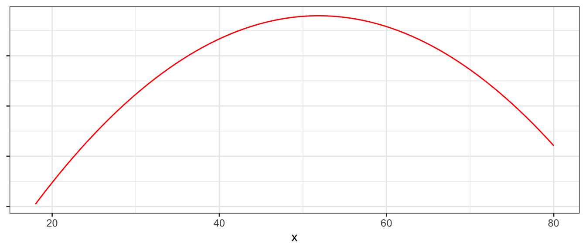
Because these variables are highly correlated, it doesn’t make sense to talk about the effect of increasing teacher salary, while holding expenditure constant, or vice-versa. Notice the standard error on the salary line in model SAT_M4 (which includes expenditures) is more than twice as high as in SAT_M3, which did not. This happens because the model is not able to separate the effect of salary from the effect of expenditure, and thus becomes very uncertain of the effect of both, resulting in high standard errors. In addition to reducing the t-statistic, and increasing the p-value, this leads to much wider and less informative confidence intervals associated with the effect of teacher salary.
Confidence intervals for model involving teacher salary, percentage taking the test, and student-to-teacher ratio.
confint(SAT_M3) 2.5 % 97.5 %
(Intercept) 968.6691802 1147.1271438
salary 0.5304797 4.5744605
frac -3.3727807 -2.4539197
ratio -8.9098147 -0.3690414Confidence intervals for model with above variables plus expenditure.
confint(SAT_M4) 2.5 % 97.5 %
(Intercept) 939.486374 1152.456698
salary -3.170247 6.446081
frac -3.370262 -2.438699
ratio -10.100417 2.851952
expend -16.779204 25.704393Models with highly correlated explanatory variables suffer from multicollinearity, which increases standard errors, making the effect of variables harder to discern. When we have explanatory variables that are highly correlated (usually with correlation greater than 0.8), we should pick out just one to include in the model. In this case, we’ll stick with teacher salary.
5.5.1.5 Check Model Assumptions
Let’s return to the model with salary, ratio, and fraction taking test. We use residual plots to assess model assumptions.
P1 <- ggplot(data=data.frame(SAT_M3$residuals), aes(y=SAT_M3$residuals, x=SAT_M3$fitted.values)) + geom_point() + ggtitle("Residual Plot") + xlab("Predicted Values") + ylab("Residuals")
P2 <- ggplot(data=data.frame(SAT_M3$residuals), aes(x=SAT_M3$residuals)) + geom_histogram() + ggtitle("Histogram of Residuals") + xlab("Residual")
P3 <- ggplot(data=data.frame(SAT_M3$residuals), aes(sample = scale(SAT_M3$residuals))) + stat_qq() + stat_qq_line() + xlab("Normal Quantiles") + ylab("Residual Quantiles") + ggtitle("QQ Plot")
grid.arrange(P1, P2, P3, ncol=3)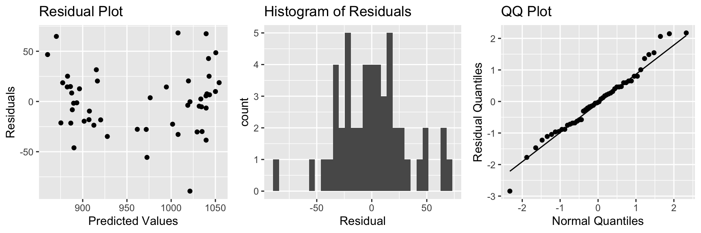
There is some sign of a quadratic trend in the residual plot, creating concern about the linearity assumption.
In models with multiple explanatory variables, it is helpful to also plot our residuals against the explanatory variables to see whether the model is properly accounting for relationships involving each variable. If we see nonlinear trends, we should consider adding a nonlinear function of that explanatory variable.
P1 <- ggplot(data=data.frame(SAT_M3$residuals), aes(y=SAT_M3$residuals, x=SAT_M3$model$salary)) + geom_point() + ggtitle("Residual by Predictor Plot") + xlab("Salary") + ylab("Residuals")
P2 <- ggplot(data=data.frame(SAT_M3$residuals), aes(y=SAT_M3$residuals, x=SAT_M3$model$frac)) + geom_point() + ggtitle("Residual by Predictor Plot") + xlab("Fraction Taking Test") + ylab("Residuals")
P3 <- ggplot(data=data.frame(SAT_M3$residuals), aes(y=SAT_M3$residuals, x=SAT_M3$model$ratio)) + geom_point() + ggtitle("Residual by Predictor Plot") + xlab("Student to Teach Ratio") + ylab("Residuals")
grid.arrange(P1, P2, P3, ncol=3)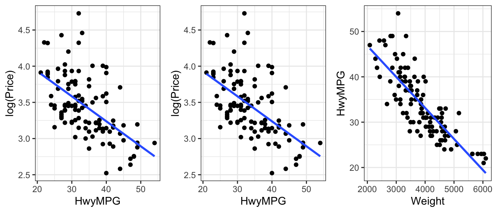
There is also a quadratic trend in the plot involving the fraction variable. We might account for this by adding a quadratic term for frac to the model.
5.5.1.6 Quadratic Term
SAT_M5 <- lm(data=SAT, sat~salary+frac+I(frac^2)+ratio )
summary(SAT_M5)
Call:
lm(formula = sat ~ salary + frac + I(frac^2) + ratio, data = SAT)
Residuals:
Min 1Q Median 3Q Max
-66.09 -15.20 -4.64 15.06 52.77
Coefficients:
Estimate Std. Error t value Pr(>|t|)
(Intercept) 1039.21242 36.28206 28.643 < 0.0000000000000002 ***
salary 1.80708 0.83150 2.173 0.0351 *
frac -6.64001 0.77668 -8.549 0.0000000000555 ***
I(frac^2) 0.05065 0.01025 4.942 0.0000111676728 ***
ratio -0.04058 1.96174 -0.021 0.9836
---
Signif. codes: 0 '***' 0.001 '**' 0.01 '*' 0.05 '.' 0.1 ' ' 1
Residual standard error: 26.38 on 45 degrees of freedom
Multiple R-squared: 0.8858, Adjusted R-squared: 0.8757
F-statistic: 87.28 on 4 and 45 DF, p-value: < 0.00000000000000022We notice a small p-value associated with the quadratic term, indicating SAT scores do indeed show evidence of a quadratic trend with respect to the percentage of students taking the test.
We now examine residual plots for the model that includes the quadratic term for frac.
P1 <- ggplot(data=data.frame(SAT_M5$residuals), aes(y=SAT_M5$residuals, x=SAT_M5$fitted.values)) + geom_point() + ggtitle("Residual Plot") + xlab("Predicted Values") + ylab("Residuals")
P2 <- ggplot(data=data.frame(SAT_M5$residuals), aes(x=SAT_M5$residuals)) + geom_histogram() + ggtitle("Histogram of Residuals") + xlab("Residual")
P3 <- ggplot(data=data.frame(SAT_M5$residuals), aes(sample = scale(SAT_M5$residuals))) + stat_qq() + stat_qq_line() + xlab("Normal Quantiles") + ylab("Residual Quantiles") + ggtitle("QQ Plot")
grid.arrange(P1, P2, P3, ncol=3)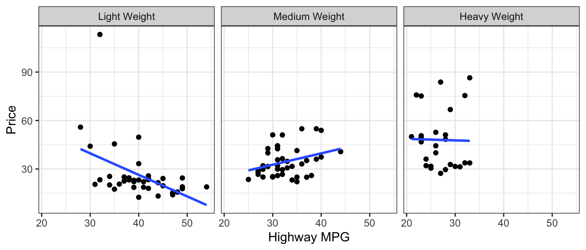
P1 <- ggplot(data=data.frame(SAT_M3$residuals), aes(y=SAT_M5$residuals, x=SAT_M5$model$salary)) + geom_point() + ggtitle("Residual by Predictor Plot") + xlab("Salary") + ylab("Residuals")
P2 <- ggplot(data=data.frame(SAT_M3$residuals), aes(y=SAT_M5$residuals, x=SAT_M5$model$frac)) + geom_point() + ggtitle("Residual by Predictor Plot") + xlab("Fraction Taking Test") + ylab("Residuals")
P3 <- ggplot(data=data.frame(SAT_M3$residuals), aes(y=SAT_M5$residuals, x=SAT_M5$model$ratio)) + geom_point() + ggtitle("Residual by Predictor Plot") + xlab("Student to Teach Ratio") + ylab("Residuals")
grid.arrange(P1, P2, P3, ncol=3)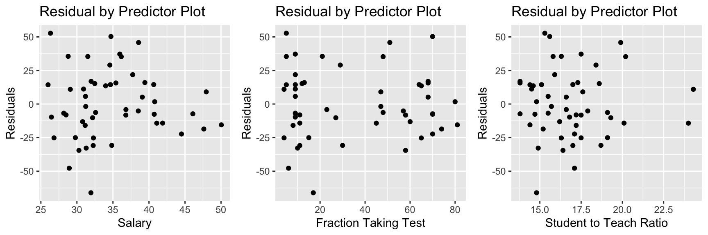
The quadratic trend in the residual by predicted plot and second residual by fraction plot appear to have disappeared, suggesting this model has properly accounted for the quadratic trend.
Interpretations for Model with Quadratic Term
On average, a $1,000 dollar increase in average teacher salary is associated with a 1.8 point increase in average SAT score assuming fraction of students taking the SAT, and student to teacher ratio are held constant.
On average, a 1 student per teacher increase in student to teacher ratio is associated with a 0.05 point from in average SAT score, assuming average teacher salary, and percentage of students taking the SAT are held constant.
We cannot give a clear interpretation of the fraction variable, since it occurs in both linear and quadratic terms. In fact, the vertex of the parabola given by \(y=-6.64x + 0.05x^2\) occurs at \(x=\frac{6.64}{2(0.05)}\approx 66\). So the model estimates that SAT score decreases in a quadratic fashion with respect to fraction taking the test, until that fraction reaches 66 percent of student, then is expected to increase.
ggplot(data=SAT, aes(x=frac, y=sat)) + geom_point() + stat_smooth(se=FALSE)
We do see some possible quadratic trend, but we should be really careful about extrapolation. Although the trend does seem to level off in a quadratic way, we wouldn’t expect SAT scores to start to increase if more than 80 percent of students took the exam!
5.5.1.7 Account for Region?
So far, we’ve considered only quantitative explanatory variables. What if we add region of the country to the model.
SAT_M6 <- lm(data=SAT, sat~salary+frac+I(frac^2)+ratio + region )
summary(SAT_M6)
Call:
lm(formula = sat ~ salary + frac + I(frac^2) + ratio + region,
data = SAT)
Residuals:
Min 1Q Median 3Q Max
-45.309 -15.407 -1.996 13.852 41.859
Coefficients:
Estimate Std. Error t value Pr(>|t|)
(Intercept) 1085.46629 37.25849 29.133 < 0.0000000000000002 ***
salary 0.19485 0.86256 0.226 0.822378
frac -6.12514 0.84697 -7.232 0.00000000679 ***
I(frac^2) 0.04762 0.01217 3.914 0.000327 ***
ratio 0.83366 1.99687 0.417 0.678452
regionNE -11.53616 18.18986 -0.634 0.529384
regionS -40.07482 11.14606 -3.595 0.000845 ***
regionW -15.89290 11.77634 -1.350 0.184386
---
Signif. codes: 0 '***' 0.001 '**' 0.01 '*' 0.05 '.' 0.1 ' ' 1
Residual standard error: 23.58 on 42 degrees of freedom
Multiple R-squared: 0.9148, Adjusted R-squared: 0.9007
F-statistic: 64.46 on 7 and 42 DF, p-value: < 0.00000000000000022We find that on average, SAT scores were lower in the NE, S, and W regions, compared to the baseline region of MW, though only in the S is the difference large enough to yield a small p-value.
Notice that the effect of teacher salary and student-to-teacher ratio are no longer statistically significant. This happens because now we are only comparing states in the same region of the country. The p-value associated with teacher salary is now testing the null hypothesis “There is no relationship between average teacher salary and SAT score among states in the same region of the country, with the same percentage of students taking the test, and same student to teacher ratio.”
Because we only have 50 states to begin with, breaking down by region results in small sample sizes, which contributes to the large p-values. Furthermore, it is unclear why we would need to account for region here. If our goal is to assess the impact of educational spending on SAT scores, it is probably okay to compare states in different regions of the country. Unless we have some reason for wanting to compare states in the same region, we shouldn’t include region as an explanatory variable (even though including it did raise our \(R^2\) value above 0.9). In general, we should only include variables if they help us address our research question. In this case, it’s not clear that accounting for region helps us better understand the relationship between a state’s investment in education, and its students average SAT scores.
It is important to note that we should not decide whether to include a variable based on whether or not it yielded a small p-value. Adding or deleting variables from a model until we get a desired p-value on a variable we’re interested in can lead to Confirmation bias (that is choosing our model in a way that intentionally confirms what we expected or hoped to be true), and to detecting spurious correlations that will not be replicable in future studies. This phenomenon, known as p-hacking has led to incorrect and unethical conclusions. We should make modeling decisions about which variables to include in a model before looking at the p-values and then draw conclusions based on the results we see, keeping in mind that p-values are only a part of the picture.
Predictions and Intervals
Going back to Model M5, which did not include region, we can make confidence and predictions intervals corresponding to hypothetical states.
newstate <- data.frame(salary = 45, frac=0.5, ratio=15)predict(SAT_M5, newdata = newstate, interval="confidence", conf.level=0.95) fit lwr upr
1 1116.615 1085.93 1147.3We are 95% confident that the average of average SAT scores among all states with average teacher salary of 45 thousand dollars, where 50% of students take the SAT and having student-to-teacher ratio of 15 is between 1085 and 1147.
predict(SAT_M5, newdata = newstate, interval="prediction", conf.level=0.95) fit lwr upr
1 1116.615 1055.256 1177.973We are 95% confident that an individual state with average teacher salary of 45 thousand dollars, where 50% of students take the SAT and having student-to-teacher ratio of 15 will have an average SAT score between 1055 and 1178.
5.5.2 Modeling Car Price
We’ll build a model for the price of a new 2015 car, to help us understand what factors are related to the price of a car.
data(Cars2015)
Cars2015 <- Cars2015 %>% rename(Price=LowPrice)
Cars2015 <- Cars2015%>% select(-HighPrice)
glimpse(Cars2015)Rows: 110
Columns: 19
$ Make <fct> Chevrolet, Hyundai, Kia, Mitsubishi, Nissan, Dodge, Chevrole…
$ Model <fct> Spark, Accent, Rio, Mirage, Versa Note, Dart, Cruze LS, 500L…
$ Type <fct> Hatchback, Hatchback, Sedan, Hatchback, Hatchback, Sedan, Se…
$ Price <dbl> 12.270, 14.745, 13.990, 12.995, 14.180, 16.495, 16.170, 19.3…
$ Drive <fct> FWD, FWD, FWD, FWD, FWD, FWD, FWD, FWD, FWD, FWD, FWD, AWD, …
$ CityMPG <int> 30, 28, 28, 37, 31, 23, 24, 24, 28, 30, 27, 27, 25, 27, 30, …
$ HwyMPG <int> 39, 37, 36, 44, 40, 35, 36, 33, 38, 35, 33, 36, 36, 37, 39, …
$ FuelCap <dbl> 9.0, 11.4, 11.3, 9.2, 10.9, 14.2, 15.6, 13.1, 12.4, 11.1, 11…
$ Length <int> 145, 172, 172, 149, 164, 184, 181, 167, 179, 154, 156, 180, …
$ Width <int> 63, 67, 68, 66, 67, 72, 71, 70, 72, 67, 68, 69, 70, 68, 69, …
$ Wheelbase <int> 94, 101, 101, 97, 102, 106, 106, 103, 104, 99, 98, 104, 104,…
$ Height <int> 61, 57, 57, 59, 61, 58, 58, 66, 58, 59, 58, 58, 57, 58, 59, …
$ UTurn <int> 34, 37, 37, 32, 37, 38, 38, 37, 39, 34, 35, 38, 37, 36, 37, …
$ Weight <int> 2345, 2550, 2575, 2085, 2470, 3260, 3140, 3330, 2990, 2385, …
$ Acc030 <dbl> 4.4, 3.7, 3.5, 4.4, 4.0, 3.4, 3.7, 3.9, 3.4, 3.9, 3.9, 3.7, …
$ Acc060 <dbl> 12.8, 10.3, 9.5, 12.1, 10.9, 9.3, 9.8, 9.5, 9.2, 10.8, 11.1,…
$ QtrMile <dbl> 19.4, 17.8, 17.3, 19.0, 18.2, 17.2, 17.6, 17.4, 17.1, 18.3, …
$ PageNum <int> 123, 148, 163, 188, 196, 128, 119, 131, 136, 216, 179, 205, …
$ Size <fct> Small, Small, Small, Small, Small, Small, Small, Small, Smal…Exploratory Analysis
We’ll look at a summary of the categorical variables in the dataset.
Cars_Cat <- select_if(Cars2015, is.factor)
summary(Cars_Cat) Make Model Type Drive Size
Chevrolet: 8 CTS : 2 7Pass :15 AWD:25 Large :29
Ford : 7 2 Touring : 1 Hatchback:11 FWD:63 Midsized:34
Hyundai : 7 200 : 1 Sedan :46 RWD:22 Small :47
Toyoto : 7 3 i Touring: 1 Sporty :11
Audi : 6 3 Series GT: 1 SUV :18
Nissan : 6 300 : 1 Wagon : 9
(Other) :69 (Other) :103 We examine the correlation matrix of quantitative variables.
Cars_Num <- select_if(Cars2015, is.numeric)
C <- cor(Cars_Num, use = "pairwise.complete.obs")
round(C,2) Price CityMPG HwyMPG FuelCap Length Width Wheelbase Height UTurn
Price 1.00 -0.65 -0.59 0.57 0.47 0.48 0.46 0.02 0.40
CityMPG -0.65 1.00 0.93 -0.77 -0.72 -0.78 -0.69 -0.39 -0.73
HwyMPG -0.59 0.93 1.00 -0.75 -0.64 -0.75 -0.64 -0.54 -0.68
FuelCap 0.57 -0.77 -0.75 1.00 0.82 0.85 0.79 0.58 0.76
Length 0.47 -0.72 -0.64 0.82 1.00 0.81 0.92 0.46 0.84
Width 0.48 -0.78 -0.75 0.85 0.81 1.00 0.76 0.62 0.77
Wheelbase 0.46 -0.69 -0.64 0.79 0.92 0.76 1.00 0.49 0.81
Height 0.02 -0.39 -0.54 0.58 0.46 0.62 0.49 1.00 0.55
UTurn 0.40 -0.73 -0.68 0.76 0.84 0.77 0.81 0.55 1.00
Weight 0.55 -0.83 -0.84 0.91 0.82 0.91 0.81 0.71 0.80
Acc030 -0.76 0.64 0.51 -0.47 -0.38 -0.41 -0.31 0.21 -0.36
Acc060 -0.74 0.68 0.52 -0.49 -0.47 -0.46 -0.38 0.21 -0.41
QtrMile -0.76 0.65 0.49 -0.45 -0.42 -0.41 -0.35 0.25 -0.37
PageNum -0.23 0.28 0.15 -0.15 -0.23 -0.20 -0.24 0.06 -0.22
Weight Acc030 Acc060 QtrMile PageNum
Price 0.55 -0.76 -0.74 -0.76 -0.23
CityMPG -0.83 0.64 0.68 0.65 0.28
HwyMPG -0.84 0.51 0.52 0.49 0.15
FuelCap 0.91 -0.47 -0.49 -0.45 -0.15
Length 0.82 -0.38 -0.47 -0.42 -0.23
Width 0.91 -0.41 -0.46 -0.41 -0.20
Wheelbase 0.81 -0.31 -0.38 -0.35 -0.24
Height 0.71 0.21 0.21 0.25 0.06
UTurn 0.80 -0.36 -0.41 -0.37 -0.22
Weight 1.00 -0.41 -0.43 -0.39 -0.20
Acc030 -0.41 1.00 0.95 0.95 0.25
Acc060 -0.43 0.95 1.00 0.99 0.26
QtrMile -0.39 0.95 0.99 1.00 0.26
PageNum -0.20 0.25 0.26 0.26 1.00library(corrplot)
C <- corrplot(C)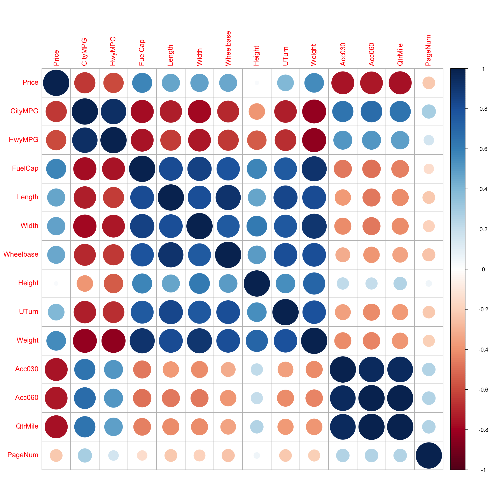
Note the high correlation between many variables in the dataset. We’ll need to be careful about multicollinearity.
5.5.2.1 Acc. and Qrt. Mile Time
We saw in Section 5.2 that it was better to model log(Price) than price itself, so we’ll continue modeling logprice here.
Model Using Just Acceleration Time
First, we fit a model using only the time it takes to accelerate from 0 to 60 mph as an explanatory variable.
Cars_M1 <- lm(data=Cars2015, log(Price) ~ Acc060)
summary(Cars_M1)
Call:
lm(formula = log(Price) ~ Acc060, data = Cars2015)
Residuals:
Min 1Q Median 3Q Max
-0.84587 -0.19396 0.00908 0.18615 0.53350
Coefficients:
Estimate Std. Error t value Pr(>|t|)
(Intercept) 5.13682 0.13021 39.45 <0.0000000000000002 ***
Acc060 -0.22064 0.01607 -13.73 <0.0000000000000002 ***
---
Signif. codes: 0 '***' 0.001 '**' 0.01 '*' 0.05 '.' 0.1 ' ' 1
Residual standard error: 0.276 on 108 degrees of freedom
Multiple R-squared: 0.6359, Adjusted R-squared: 0.6325
F-statistic: 188.6 on 1 and 108 DF, p-value: < 0.00000000000000022Confidence Interval for Effect of Acceleration Time:
exp(confint(Cars_M1)) 2.5 % 97.5 %
(Intercept) 131.4610408 220.284693
Acc060 0.7768669 0.827959We are 95% confident that a 1-second increase in acceleration time is associated with an average price decrease between 17% and 22.5%.
Model Using Just Quarter Mile Time
Now, let’s fit a different model using only the time it takes to drive a quarter mile as an explanatory variable.
Cars_M2 <- lm(data=Cars2015, log(Price) ~ QtrMile)
summary(Cars_M2)
Call:
lm(formula = log(Price) ~ QtrMile, data = Cars2015)
Residuals:
Min 1Q Median 3Q Max
-0.91465 -0.19501 0.02039 0.17538 0.60073
Coefficients:
Estimate Std. Error t value Pr(>|t|)
(Intercept) 7.8559 0.3248 24.19 <0.0000000000000002 ***
QtrMile -0.2776 0.0201 -13.81 <0.0000000000000002 ***
---
Signif. codes: 0 '***' 0.001 '**' 0.01 '*' 0.05 '.' 0.1 ' ' 1
Residual standard error: 0.275 on 108 degrees of freedom
Multiple R-squared: 0.6385, Adjusted R-squared: 0.6351
F-statistic: 190.7 on 1 and 108 DF, p-value: < 0.00000000000000022Confidence Interval for Effect of Quarter Mile Time:
exp(confint(Cars_M2)) 2.5 % 97.5 %
(Intercept) 1355.8297704 4913.077313
QtrMile 0.7279941 0.788385We are 95% confident that a 1-second increase in quarter mile time is associated with a price decrease between 21% and 27%, on average.
Model Using Both Acceleration and Quarter Mile Time
Cars_M3 <- lm(data=Cars2015, log(Price) ~ QtrMile + Acc060)
summary(Cars_M3)
Call:
lm(formula = log(Price) ~ QtrMile + Acc060, data = Cars2015)
Residuals:
Min 1Q Median 3Q Max
-0.89124 -0.20030 0.01001 0.17576 0.57462
Coefficients:
Estimate Std. Error t value Pr(>|t|)
(Intercept) 6.83974 1.54354 4.431 0.0000227 ***
QtrMile -0.17316 0.15640 -1.107 0.271
Acc060 -0.08389 0.12455 -0.673 0.502
---
Signif. codes: 0 '***' 0.001 '**' 0.01 '*' 0.05 '.' 0.1 ' ' 1
Residual standard error: 0.2757 on 107 degrees of freedom
Multiple R-squared: 0.64, Adjusted R-squared: 0.6332
F-statistic: 95.1 on 2 and 107 DF, p-value: < 0.00000000000000022Confidence Intervals from 2-variable Model
exp(confint(Cars_M3)) 2.5 % 97.5 %
(Intercept) 43.8095999 19922.799158
QtrMile 0.6168071 1.146686
Acc060 0.7183525 1.177065It does not make sense to talk about holding QtrMile constant as Acc060 increases, or vice-versa. Trying to do so leads to nonsensical answers.
We are 95% confident that a 1-second increase in quarter mile time is associated with an average price change between a 38% decrease and 15% increase, assuming acceleration time is held constant.
We are 95% confident that a 1-second increase in acceleration time is associated with an average price change between a 28% decrease and 18% increase, assuming quarter mile time is held constant.
Because these variables are so highly correlated, it the model cannot separate the effect of one from the other, and thus is uncertain about both. Notice the very large standard errors associated with both regression coefficients, which lead to very wide confidence intervals.
In fact, if two variables are perfectly correlated, it will be impossible to fit them both in a model, and you will get an error message.
Impact on Prediction
Suppose we want to predict the price of a car that can accelerate from 0 to 60 mph in 9.5 seconds, and completes a quarter mile in 17.3 seconds.
exp(predict(Cars_M1, newdata = data.frame(Acc060=9.5, QtrMile=17.3))) 1
20.92084 exp(predict(Cars_M2, newdata = data.frame(Acc060=9.5, QtrMile=17.3))) 1
21.18223 exp(predict(Cars_M3, newdata = data.frame(Acc060=9.5, QtrMile=17.3))) 1
21.05489 The predicted values are similar. Multicollinearity does not hurt predictions, only interpretations.
5.5.2.2 Adding Weight to Model
We could use either quarter mile time or acceleration time as an explanatory variable, but we shouldn’t use both. We’ll proceed with quarter mile time.
Cars_M4 <- lm(data=Cars2015, log(Price) ~ QtrMile + Weight)
summary(Cars_M4)
Call:
lm(formula = log(Price) ~ QtrMile + Weight, data = Cars2015)
Residuals:
Min 1Q Median 3Q Max
-0.79365 -0.13931 -0.01368 0.15773 0.42234
Coefficients:
Estimate Std. Error t value Pr(>|t|)
(Intercept) 6.21326823 0.33491778 18.552 < 0.0000000000000002 ***
QtrMile -0.22482146 0.01748563 -12.858 < 0.0000000000000002 ***
Weight 0.00020606 0.00002641 7.803 0.0000000000043 ***
---
Signif. codes: 0 '***' 0.001 '**' 0.01 '*' 0.05 '.' 0.1 ' ' 1
Residual standard error: 0.2206 on 107 degrees of freedom
Multiple R-squared: 0.7696, Adjusted R-squared: 0.7653
F-statistic: 178.7 on 2 and 107 DF, p-value: < 0.00000000000000022\(R^2\) went up from 0.64 to 0.76!
We might consider adding an interaction term between quarter mile time and weight. This would mean that we think the effect of quarter mile time on price of a car is different for heavier cars than for lighter cars. It’s not clear to me why that would be the case.
Cars_M5 <- lm(data=Cars2015, log(Price) ~ QtrMile * Weight)
summary(Cars_M5)
Call:
lm(formula = log(Price) ~ QtrMile * Weight, data = Cars2015)
Residuals:
Min 1Q Median 3Q Max
-0.82013 -0.12076 -0.01464 0.14717 0.41928
Coefficients:
Estimate Std. Error t value Pr(>|t|)
(Intercept) 4.1114189 1.3270870 3.098 0.00249 **
QtrMile -0.0963226 0.0804413 -1.197 0.23381
Weight 0.0008110 0.0003707 2.188 0.03089 *
QtrMile:Weight -0.0000373 0.0000228 -1.636 0.10482
---
Signif. codes: 0 '***' 0.001 '**' 0.01 '*' 0.05 '.' 0.1 ' ' 1
Residual standard error: 0.2188 on 106 degrees of freedom
Multiple R-squared: 0.7752, Adjusted R-squared: 0.7689
F-statistic: 121.9 on 3 and 106 DF, p-value: < 0.00000000000000022p-value on interaction is not that small. \(R^2\) didn’t go up much. There doesn’t seem to be much reason to complicate the model by adding an interaction term.
5.5.2.3 Adding More Variables
We’ll consider adding highway MPG to the model.
Cars_M6 <- lm(data=Cars2015, log(Price) ~ QtrMile + Weight + HwyMPG)
summary(Cars_M6)
Call:
lm(formula = log(Price) ~ QtrMile + Weight + HwyMPG, data = Cars2015)
Residuals:
Min 1Q Median 3Q Max
-0.82308 -0.14513 -0.01922 0.16732 0.41390
Coefficients:
Estimate Std. Error t value Pr(>|t|)
(Intercept) 6.54954436 0.42196132 15.522 < 0.0000000000000002 ***
QtrMile -0.21699008 0.01843615 -11.770 < 0.0000000000000002 ***
Weight 0.00015922 0.00004456 3.573 0.000532 ***
HwyMPG -0.00961141 0.00737658 -1.303 0.195410
---
Signif. codes: 0 '***' 0.001 '**' 0.01 '*' 0.05 '.' 0.1 ' ' 1
Residual standard error: 0.2198 on 106 degrees of freedom
Multiple R-squared: 0.7732, Adjusted R-squared: 0.7668
F-statistic: 120.5 on 3 and 106 DF, p-value: < 0.00000000000000022HwyMPG doesn’t make change \(R^2\) much, and has a high correlation with weight. Let’s not include it.
Next, we’ll consider adding categorical explanatory variables Size, and Drive.
P1 <- ggplot(data=Cars2015, aes(x=log(Price), y=Size)) + geom_boxplot() + ggtitle("Price by Size")
P2 <- ggplot(data=Cars2015, aes(x=log(Price), y=Drive)) + geom_boxplot() + ggtitle("Price by Drive")
grid.arrange(P1, P2, ncol=2)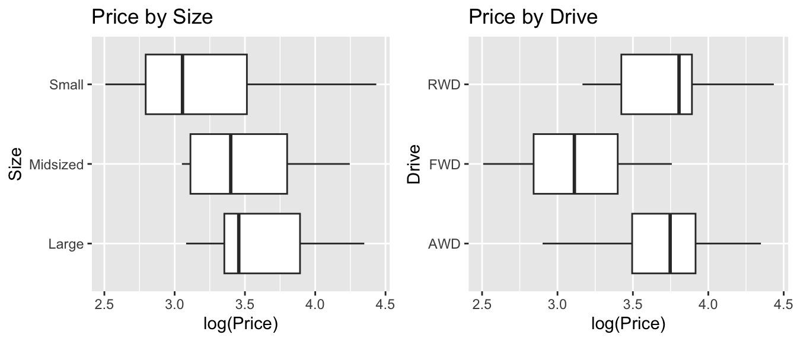
Information about size is already included, through the weight variable. Let’s add drive type to the model.
Cars_M7 <- lm(data=Cars2015, log(Price) ~ QtrMile + Weight + Drive)
summary(Cars_M7)
Call:
lm(formula = log(Price) ~ QtrMile + Weight + Drive, data = Cars2015)
Residuals:
Min 1Q Median 3Q Max
-0.72386 -0.10882 0.01269 0.13306 0.45304
Coefficients:
Estimate Std. Error t value Pr(>|t|)
(Intercept) 5.81406789 0.33961789 17.119 < 0.0000000000000002 ***
QtrMile -0.19007439 0.01959554 -9.700 0.000000000000000289 ***
Weight 0.00020496 0.00002583 7.936 0.000000000002420675 ***
DriveFWD -0.22403222 0.05704513 -3.927 0.000154 ***
DriveRWD -0.13884399 0.06227709 -2.229 0.027913 *
---
Signif. codes: 0 '***' 0.001 '**' 0.01 '*' 0.05 '.' 0.1 ' ' 1
Residual standard error: 0.2077 on 105 degrees of freedom
Multiple R-squared: 0.7995, Adjusted R-squared: 0.7919
F-statistic: 104.7 on 4 and 105 DF, p-value: < 0.00000000000000022We found evidence of differences in price between front-wheel drive and rear-wheel drive, compared to all wheel drive cars.
Next, we’ll explore adding size to the model.
Cars_M8 <- lm(data=Cars2015, log(Price) ~ QtrMile + Weight + Drive + Size)
summary(Cars_M8)
Call:
lm(formula = log(Price) ~ QtrMile + Weight + Drive + Size, data = Cars2015)
Residuals:
Min 1Q Median 3Q Max
-0.71092 -0.12126 0.01355 0.11831 0.44439
Coefficients:
Estimate Std. Error t value Pr(>|t|)
(Intercept) 5.66594310 0.37169625 15.243 < 0.0000000000000002 ***
QtrMile -0.19256547 0.02000711 -9.625 0.000000000000000505 ***
Weight 0.00023978 0.00004101 5.847 0.000000059416930182 ***
DriveFWD -0.21598794 0.05780323 -3.737 0.000306 ***
DriveRWD -0.15259183 0.06410851 -2.380 0.019142 *
SizeMidsized 0.04699095 0.06271499 0.749 0.455398
SizeSmall 0.08875861 0.08105810 1.095 0.276071
---
Signif. codes: 0 '***' 0.001 '**' 0.01 '*' 0.05 '.' 0.1 ' ' 1
Residual standard error: 0.2085 on 103 degrees of freedom
Multiple R-squared: 0.8018, Adjusted R-squared: 0.7903
F-statistic: 69.46 on 6 and 103 DF, p-value: < 0.00000000000000022Adding size barely increased \(R^2\) at all. We find no evidence of differences in price between the three sizes, after accounting for the other variables.
Note: Information about car size is already being taken into account through the Weight variable.
We could keep looking at other variables to add, but at this point, we have a model that gives us a good sense of the factors related to price of a car, capturing 80% of total variability in car price, and is still easy to interpret.
For our research purposes, this model is good enough.
5.5.2.4 Check of Model Assumptions
We’ll use residuals to check the model assumptions.
Residual by Predicted Plot, Histogram of Residuals, and Normal Quantile-Quantile Plot
P1 <- ggplot(data=data.frame(Cars_M7$residuals), aes(y=Cars_M7$residuals, x=Cars_M7$fitted.values)) + geom_point() + ggtitle("Residual Plot") + xlab("Predicted Values") + ylab("Residuals")
P2 <- ggplot(data=data.frame(Cars_M7$residuals), aes(x=Cars_M7$residuals)) + geom_histogram() + ggtitle("Histogram of Residuals") + xlab("Residual")
P3 <- ggplot(data=data.frame(Cars_M7$residuals), aes(sample = scale(Cars_M7$residuals))) + stat_qq() + stat_qq_line() + xlab("Normal Quantiles") + ylab("Residual Quantiles") + ggtitle("QQ Plot")
grid.arrange(P1, P2, P3, ncol=3)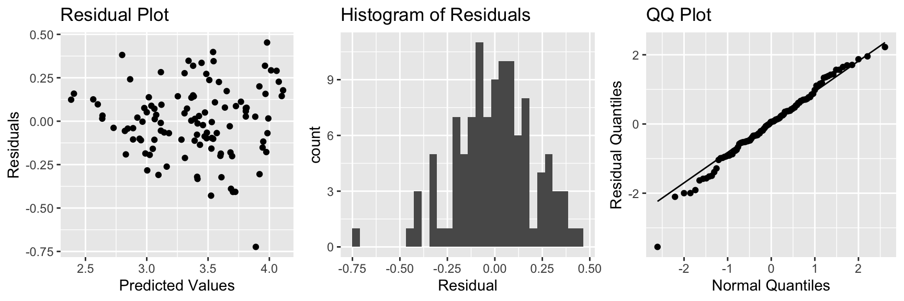
There is slight concern about constant variance, but otherwise, the model assumptions look good.
Residual by Predictor Plots
P1 <- ggplot(data=data.frame(Cars_M7$residuals), aes(y=Cars_M7$residuals, x=Cars_M7$model$QtrMile)) + geom_point() + ggtitle("Residual by Predictor Plot") + xlab("QtrMile") + ylab("Residuals")
P2 <- ggplot(data=data.frame(Cars_M7$residuals), aes(y=Cars_M7$residuals, x=Cars_M7$model$Weight)) + geom_point() + ggtitle("Residual by Predictor Plot") + xlab("Weight") + ylab("Residuals")
P3 <- ggplot(data=data.frame(Cars_M7$residuals), aes(y=Cars_M7$residuals, x=Cars_M7$model$Drive)) + geom_point() + ggtitle("Residual by Predictor Plot") + xlab("Drive") + ylab("Residuals")
grid.arrange(P1, P2, P3, ncol=3)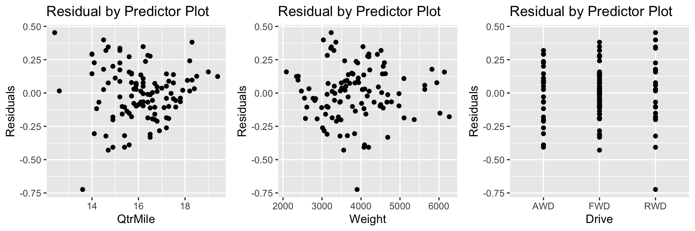
These plots don’t raise any concerns.
5.5.2.5 Coefficients and Exponentiation
The model coefficients are shown below.
Cars_M7$coefficients (Intercept) QtrMile Weight DriveFWD DriveRWD
5.8140678915 -0.1900743859 0.0002049586 -0.2240322171 -0.1388439916 Since we used a log transformation, we should interpret \(e^{b_j}\) rather than \(b_j\) itself.
exp(Cars_M7$coefficients)(Intercept) QtrMile Weight DriveFWD DriveRWD
334.9790161 0.8268976 1.0002050 0.7992894 0.8703638 The price of a car is expected to decrease by 17% for each additional second it takes to drive a quartermile, assuming weight, and drive type are held constant.
The price of a car is expected to increase by 0.02% for each additional pound, assuming quarter mile time, and drive type are held constant. Thus, a 100 lb increase is associated with an expected 2% increase in price, assuming quarter mile time, and drive type are held constant.
FWD cars are expected to cost 20% less than AWD cars, assuming quarter mile time and weight are held constant.
RWD cars are expected to cost 13% less than AWD cars, assuming quarter mile time and weight are held constant.
5.5.2.6 Confidence and Prediction Intevals
We’ll use our model to estimate the average price with the following characteristics, and also to predict the price of a new car with the given characteristics.
newcar <- data.frame(QtrMile = 18, Weight=2400, Drive = "AWD")This is an interval for log(Price).
predict(Cars_M7, newdata=newcar, interval="confidence", level=0.95) fit lwr upr
1 2.884629 2.741423 3.027836Exponentiating, we obtain
exp(predict(Cars_M7, newdata=newcar, interval="confidence", level=0.95)) fit lwr upr
1 17.89693 15.50904 20.65249We are 95% Confident that the average price of all new 2015 cars that weigh 2400 lbs, drive a quarter mile in 18 seconds on a fast track, and have all wheel drive is between 15.5 thousand and 20.7 thousand dollars.
Next, we calculate a prediction interval for an individual car with these characteristics.
exp(predict(Cars_M7, newdata=newcar, interval="prediction", level=0.95)) fit lwr upr
1 17.89693 11.57309 27.6763We are 95% Confident that the price of an individual new 2015 car that weighs 2400 lbs, drives a quarter mile in 18 seconds on a fast track, and has all wheel drive will be between 11.6 thousand and 27.7 thousand dollars.
5.5.2.7 Model Building Summary
Consider the following when building a model for the purpose of interpreting parameters and understanding and drawing conclusions about a population or process.
- Model driven by research question
- Include variables of interest
- Include potential confounders (like in SAT example)
- Avoid including highly correlated explanatory variables
- Avoid messy transformations and interactions where possible
- Use residual plots to assess appropriateness of model assumptions
- Aim for high \(R^2\) but not highest
- Aim for model complex enough to capture nature of data, but simple enough to give clear interpretations
5.2.7 Comments on Transformations
We could have used another transformation, such as \(\sqrt{\text{Price}}\)
The log tranform leads to a nice interpretation involving percent change. Other transformations might yield better predictions, but are often hard to interpret.
There is often a tradeoff between model complexity and interpretability. We’ll talk more about this.
We did an example of a transformation in a model with a single explanatory variable.
If the explanatory variable is categorical:
When working with multiple regression models, it is still important to mention holding other variables constant when interpreting parameters associated with one of the variables.